צפון איטליה בקראוון- פסח 2025
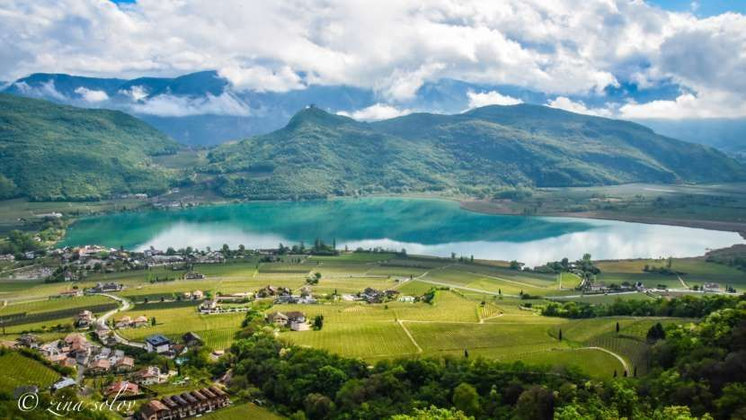
סיכום החופשה שלנו באפריל 2025, זוג הורים+ תאומיקס בני 7 בטיול קראוון לצפון איטליה.
חשקה נפשי בטיול בקראון, הפעם האחרונה שטיילנו בקראון היתה לפני 3 שנים, הילדודס גדלו מעט, וחופשת פסח בפתח. עד כה יצא לנו לטייל עם קראוון באוסטריה ובאיסלנד (פעמיים בכל אחד מהם), הטיולים באוסטריה היו שניהם מחוץ לעונה (באפריל) והיו מצויינים, איסלנד בכלל היתה מדהימה, עכשיו נשאר רק למצוא יעד. רציתי לגוון מעט מאוסטריה (למרות שלא מיצינו אותה כלל) ולבדוק משהו אחר, שמעתי המון דברים טובים על צפון איטליה, ובמקרה גם ראיתי שוויז מוכרים כרטיסים למילאנו במחירים סבירים לגמרי, והנה נמצא לו היעד לחופשה.
קצת מידע כללי:
טיסה: כרטיסי טיסה למילאנו מלפנסה, קניתי בחודש דצמבר, עם חברת וויז (הישראליות כבר רצו מחירים מופקעים לפסח), בכדי להוזיל מעט ״גלשנו״ קצת אחרי פסח (מוזיל משמעותית). את המזוודות הזמנתי יומיים לפני הטיסה כך שיצא לנו מחיר סביר יחסית לתקופה.
למזלנו לא היו אירועים ביטחוניים והטיסה יצאה ללא ביטולים, רק עם איחור של שעה בהמראה בגלל עיכוב טיסה קודמת של אותו מטוס. אותו הדבר היה גם בחזור שהטיסה התעכבה בשעה וקצת בגלל עיכוב בטיסה הקודמת. וויז זה לואו קוסט אז לא לצפות למשהו מיוחד.
מלון- בגלל נחיתה מאוחרת (מתוכנן 22:50 בפועל 23:50), חיפשתי כבר מראש לינה באזור שליד שדה התעופה. יש מלונות ממש במרחק הליכה מהטרמינל, הרבה מלונות בקרבת מקום מספקים גם שאטלים, כמובן שתמיד אפשר להתרחק מעט יותר ולקחת מונית. מחירי המלונות סביב הטרמינל פשוט לא שפויים, לא הצלחתי למצוא מחיר נמוך מ-1000 שח ללילה עבור זוג+2 שלא לדבר על חדר לזוג+2 (רוב החדרים הם לזוגות גג לזוג+ילד) לא רק המחירים ההזויים אלא גם כמעט ולא היו אפשרויות לביטול חינם. בסוף התפשרתי על מלון בדירוג של 7.9 בבוקינג, אבל הציע חדר ל-4 וכן ארוחת בוקר ושאטל בעלות של 5 יורו למבוגר- מלון idea hotel . לבוא בלי ציפיות, נטו מלון לשים את הראש בלילה ולאכול משהו לפני היציאה לדרך בבוקר. בסהכ היה נקי, שקט ויחס נעים. עוד שיקול בבחירת המלון הוא קבלת הקראון- אמורים להביא לנו אותו עד למלון ולא מסכימים לכל המלונות אלא רק לאלה באזור שדה התעופה.
קראון- הרבה שואלים, למה בכלל קראוון? למה להצטופף ועוד ״לעבוד״ בחופשה?! כמו לכל דבר בחיים יש יתרונות וחסרונות. נתחיל עם חסרונות:
צפיפות: אין מה לעשות, בסוף לא משנה כמה גדול הקראון עדיין הוא יהיה צפוף.
נוחות: קראוון זה לא מלון 5 כוכבים, המיטה לא מפנקת, השירוקלחת פצפונת וצריך לתפעל (למלא ולרוקן מים, לשטוף שירותים- אמנם זה הרבה יותר פשוט ממה שזה נשמע)ֿ מקרר קטן ומטבח פצפון.
עבירות וחניה: מדובר ברכב גדול ואי אפשר להיכנס איתו לערים, כפרים או לכבישים צרים, הרבה מקומות חניה לא מתאימים לקראון (יש מעקה עליון או הקראון פשוט בולט מהסימון- שזה big no no באיטליה. לכן חלק מתכנון טוב, זה להבין לאן נוסעים ולראות אם בכלל אפשר להגיע לשם ולחנות עם הקראון.
הנסיעה עצמה בקראוון איטית יותר מרכב רגיל וצריך לקחת זאת בחשבון בשקלול זמני נסיעה.
ולמרות זאת, יש גם לא מעט יתרונות:
מדובר על טיול נטו בחיק הטבע, רוב החניונים ממוקמים ממש בטבע עם נופים מהממים או בקרבתם.
הבית תמיד איתכם: קרה לכם שבנסיעה ארוכה למישהו יש שירותים? אז הנה השירותים איתכם. סיימתם מסלול ואתם גוועים ברעב ועכשיו צריך לחפש מסעדה ולחכות עד שהמנה תצא? המטבח והמקרר תמיד ליד. נסעתם לטייל ושכחתם את הכובע והמעיל במלון או את בגד הים? הארון איתכם. לא צריך לפרוק ולארוז מזוודות.
חסכון: אם אתם מוכנים לבשל אז חוסכים לא מעט כסף על מסעדות. ובהתחשב המחירי המלונות שראיתי באיטליה בהחלט מדובר גם בחסכון על הלינה.
גמישות: הבית תמיד איתי, לא מתאים לי במקום מסויים? מזג האוויר התקלקל ובא לי מקום אחר? פשוט נוסעים מבלי להתאכזב על כך שהזמנתי 2 לילות אבל לא בא לי להיות פה, או ההפך, אהבתי את המקום ובא לי לשאר עוד.
רוב הקמפינגים מספקים כרטיס תחבורה ציבורית לשימושכם ככה שתמיד אפשר לנצל את זה ולקפוץ לטייל בעיר הסמוכה.
שכרנו את הקראון דרך בנדנה (שכרנו דרכם כבר כמה פעמים) קיבלנו קראון מחברת blurent, התעקשתי על דגם עם מיטה זוגית מאחור ומיטה למעלה בכדי לא להסתבך בכל לילה לסדר עוד מיטה מפינת האוכל. קיבלנו דגם קטן יחסית, רק 5.95 מטר מה שמאוד הקל על הניידות (אבל ממש לא הקל על הצפיפות). כאמור הקראוון הגיע עם הנציג ישירות למלון (שירות בתוספת תשלום שלא אפשרי אצל כל ספק, אבל בהתחשב במחירי המוניות וניהול זמנים בעיני זה השתלם).הילדים אימצו מיד את המיטה העליונה וכך היתה להם פינה משלהם בקראון.
כאמור את הקראון קיבלנו במלון והחזרנו בשדה התעופה- ממש לפני הטיסה.
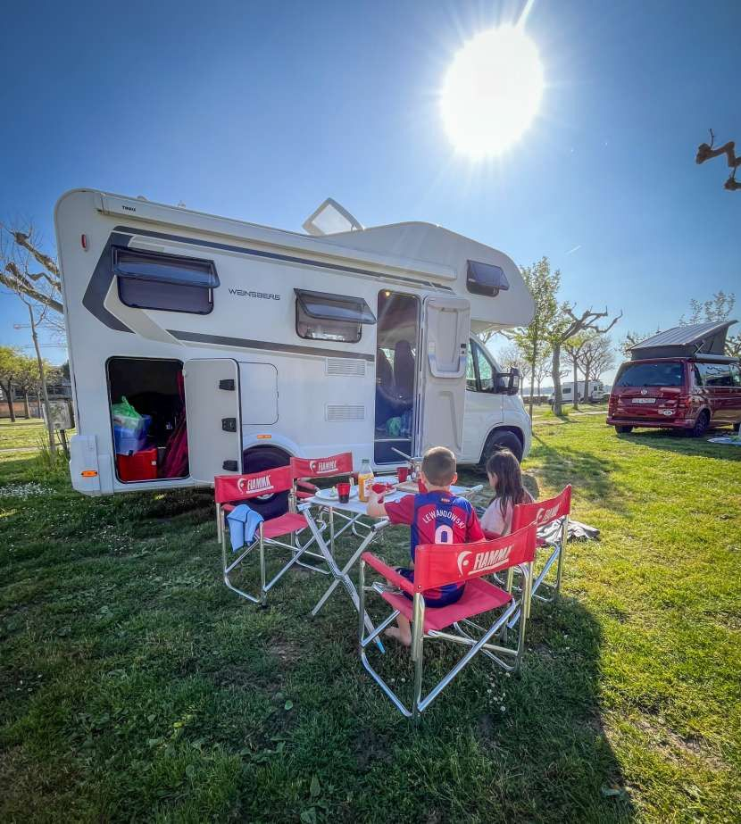
מזג אויר- הדבר היחיד שיכול לחרב טיול שלם ואין לנו שמץ שליטה עליו. אפריל זו עונת המעבר באירופה, ומזג האויר מאוד לא צפוי בעונה הזו. בטיולים הקודמים באפריל זכינו לטעום מכל דבר- משלג ועד שרב אבל כמעט ללא ימים גשומים שלא מאפשרים טיול. הפעם לא היה לנו מזל כלל! פרט ליום הראשון והיום האחרון, הימים היו קרים וגשומים. למזלינו הצטיידנו שנה שעברה בצ'כיה במעילים איכותיים לילדים כך שלא סבלנו מקור, ועם ביגוד טוב יכולנו גם לטייל בטפטוף.
מסלול: היה מאוד קשה להחליט לאן לנסוע ממילאנו. במערב יש את חבל אאוסטה, אבל נפסל בגלל העונה- נראה ששום דבר לא פעיל שם עדיין לכן מיותר לנסוע עד לשם בעונה זו. רציתי שוויץ, אבל המרחק לחלק המעניין יותר (אינטרלאקן) לא קצר כלל וגם פחדתי שבאפריל יהיה פחות מתאים. לכן החלטתי על המסלול הקלאסי של שילוב גארדה ודולומיטים. קראתי בכל מקום שאין לי מה לחפש בדולומיטים בעונה הזו, הכל סגור ומסוגר, ואכן זה כך, אין אפילו קמפינגים שפעילים בעונה זו, אפילו מרחצאות חמים בדולומיטים סגורים. אבל קיוויתי לזכות לטייל בטבע, גם בלי רכבלים, לכן לדולומיטים הקצאתי בין 2-3 ימים, אמרתי נראה לפי מזג האוויר.
אחרי שסרקתי את החלק הטכני, הנה סיכום מפורט של הטיול:
10.4.25: הטיסה
טיסה מאוחרת למילאנו מלפנסה. היינו אמורים לנחות בשעה 22:50 אבל אחרי עיכוב של שעה נוחתים ב-23:00. למזלנו אין תורים כך שיצאנו מהר וגם המזוודות לא התעכבו ממש. השאטל למלון יוצא כל חצי שעה עגולה, כך שהספקנו ל-00:30. הילדודס נמנמו בטיסה אבל עדיין גמורים מעייפות. קיבלנו חדר ל-4 עם 2 מיטות זוגיות לא שיא הנוחות אבל יתאים ללינה, המקלחת נקיה עם זרם מים טוב. המלון פשוט מאוד ומיושן, אני מבינה למה קיבל דירוג נמוך בבוקינג. מצד שני בשביל לישון כמה שעות הוא מצויין. אנחנו כמובן נופלים מרוב עייפות.
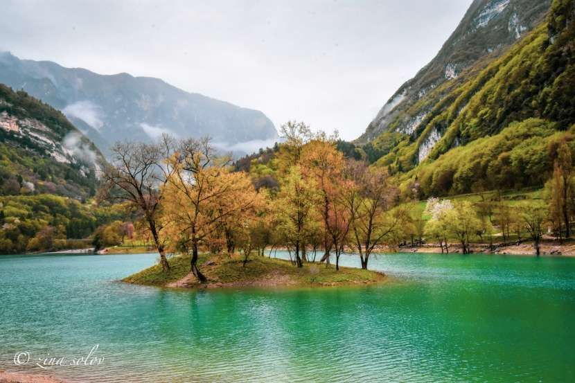
11.4.25- הקראוון ותחילת הטיול
קבענו שאת הקראוון נקבל בין 9 ל-9 וחצי, לאור הנחיתה המאוחרת שלנו אתמול ממש חששתי שבתשע כולנו עוד נישן, אבל התבדתי מהר מאוד. בשבע בבוקר כבר היה אור יום וכולנו התעוררנו, הילדים רעננים, אני באנרגיות ורק החצי עייף. ארוחת הבוקר במלון הפתיע לטובה, לפחות בסטנדרטים של הילדים היה להם הרבה מה לטעום. רק עלינו לחדר לאריזה והנה מתקשר הנציג שהגיע. השארנו את הצוציקים בחדר לראות סרט בטאבלט וירדנו למטה לקבל את הקראון.
כשהזמנתי את הקראוון היה לי חשוב שתהיה מיטה קבועה גם מעל הנהג, מניסיון קודם בטיול באוסטריה, זה נורא מעצבן ל״סדר״ מיטה בכל ערב, גם רציתי שלילדים תהיה פינה שלהם שיוכלו להיות בה. כך שרציתי קראון ל-6 אנשים, עם 2 ספסלי ישיבה בפינת האוכל (כמו שהיה לנו באיסלנד) אמנם הרכב גדול אבל יחסית מרווח (בקנה מידה קראווני), אולם דגם כזה לא היה במלאי אצל אף ספק, והוצע לנו דגם קטן יותר- רק ספסל אחד מאחור. היתרון- רכב קצר יותר ועביר יותר, החיסרון- צפוף יותר, והמקרר קטן משמעותית. מצד שני ההסדר של לקבל את הרכב ליד שדה התעופה ולהחזיר בשדה ועוד בשעות הבוקר מאוד נוח (אם כי כרוך בתשלום נוסף, בקיזוז עלות מוניות לתחנת השכרה שנמצאת כ-60 קמ משם המחיר לא משמעותית גבוה יותר).
הנציג האיטלקי לא ידע מילה באנגלית, מזל שיש טרנסלייט בטלפון, בכל מקרה בגלל שאנחנו כבר מנוסים בטיולי קראון, ומכירים את המנגנונים ההסבר היה מהיר ויעיל. הנציג נורא ביקש שנקפיץ אותו לטרמינל 2, נסיעה של 5 דק, כך שאני חזרתי לחדר לסיים אריזות והחצי נסע להקפיץ (כמובן שהתברבר בדרך חזרה וחזר כעבור 40 דק.)
לקראת השעה 11 אנחנו יוצאים בנחת לכיוון אגם גארדה. בהתחלה חשבתי לעצור במרכזי הקניות שבדרך להצטיידות אבל במחשבה שניה, היום יפה ושמשי וחבל לבזבז אותו על עצירות, סופרים יש גם סביב גראדה ונצטייד כשנגיע.
עלינו על כביש האגרה, שרכב פרטי יכול לנסוע בו עד 130 קמ״ש, עם קראוון אם אתם ב-100 קמ״ש מצבכם טוב. קצת על כבישי האגרה באיטליה- הכבישים מצויינים, מרווחים וגדולים, בכולם יש תחנות עצירה שנקראות autogrill, בסניפים אלה תמצאו מסעדות מזנון (לא רעות כלל עם מנות אוכל חם של בשר, פסטה וכו), חנויות נוחות, מזכרות ומה לא. כמובן שעשינו עצירת נישנוש אחת. שימו לב שבכניסה לכביש אגרה צריך לקחת כרטיס, בסיומו (או כשאתם יוצאים ממנו) מכניסים את הכרטיס במכונה ומוצג הסכום לתשלום, אם שכחתם לקחת כרטיס (כמו שקרה לנו) תשלמו פשוט סכום גבוה כי לא באמת תדאו להגיד באיזה מקטע נכנסתם.
הנסיעה לדרום מזרח אגם גארדה (העיירה פסקיירה דל גארדה) לקחה לנו כשעתיים וחצי. מצאנו סופר נחמד של רשת famila בעיירה פסקיירה דל גארדה, הצטיידנו לכל הטיול שלנו. כן כן קניתי גם 3 קולבים כי יש ארון פצפון ויש שם תליה למעילים שיהיה מסודר. החצי לא יודה בחיים אבל הקולבים האלה שידרגו את האחסון- לא רק לתליית מעילים אלא גם לייבוש בגדים רטובים במקלחת של הקראון.
משם נסענו לקמפינג שלנו- Campeggio del Garda. מדובר בקמפינג שהוא גם כפר נופש ובו יש אופציות לינה רבות ומגוונות, החל מחניון לקראוון ועד לבקתות חמודות. הקמפינג נמצא ממש על האגם אולם החוף של האגם שייך לעיריות ולא לאתרי קמפינג לכן לא תמצאו (לפחות בחלק המזרחי של האגם) אף קמפינג עם חוף פרטי. מצד שני האגם והטיילת במרחק 300 מטר מכם. המחיר שלו גם לא היה יקר ועלה לנו 44 יורו ללילה אחד (כולל חשמל). שלחתי את הילדודס לעשות סיור וניצלתי את הזמן לפרוק מזוודות ולסדר את הקניות בעוד שהחצי נח מהנהיגה וכבר פתח את שולחן הפיקניק ולוגם לו בנחת מיץ תפוזים (העיקר הוא מקטר שהוא לא נח באף חופשה).
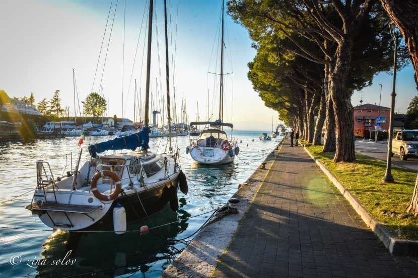
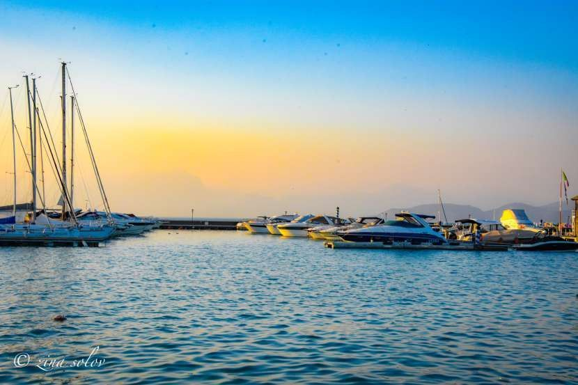
לאחר שהכל נפרק, פרגנתי לחצי בזמן מנוחה והלכתי עם הצוציקים לסיור בטיילת. איזה מזג אויר נפלא זכינו לו, קיץ של ממש (או ככה חשבתי), עד כדי כך שנכנסנו לטבול רגליים באגם (הקפוא). שוטטנו קצת בטיילת (שנמשכת עד העיירה) וחזרנו להוציא את החצי ממנוחתו ולצאת לסיבוב בעיירה פסקיירה דל גארדה. האיזור העתיק של העיירה נמצא כקילומטר וקצת מהקמפינג, בהליכה מאוד נעימה לאורך הטיילת, נכנסנו לעיר העתיקה, ישבנו וצפינו בגדים שקפצו מהמים סביב התעלה שהקיפה את החומות, עלינו על החומות ותיצפתנו על הנמל, ואז החלו הקיטורים, אנחנו עייפים, משעמם פה, מה צריך ללכת את כל הדרך חזרה, וכו וכו. לא ראינו איזה פיצרייה מזמינה בדרך אז חזרנו בנחת לקראוון, אילתרתי לנו ארוחה מצויינת, ישבנו בחוץ ושיחקנו קצת בקלפים (מה שהפך למסורת הטיול בכל ערב). הצוציקים נרדמו ללא בעיות ב״חדרם החדש״ למעלה. ואילו החצי סבל נורא מצפיפות וחום (לדבריו לא יכל לנשום) כי חיממתי את הקראון ל-100 מעלות…
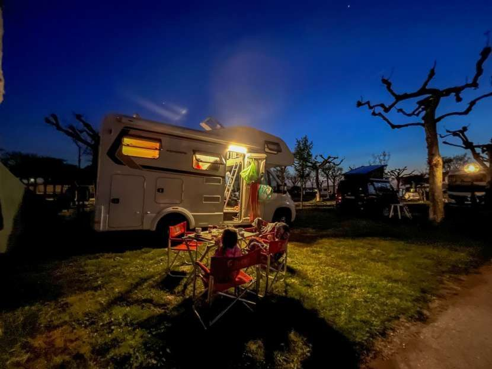
12.4.25: פארק שעשועים וסקנדל בסדר גודל אפי!
התעוררנו לבוקר יפה ושמשי, זה כיף להתעורר בקראוון לנוף הטבע. חשקה נפשי בבאגט טרי ואיזה יופי, ברוב הקמפינגים הגדולים יש מסעדות וגם חנות. גם ככה הייתי צריכה לצעוד לקבלה כדי לרכוש מהם כרטיסים לגארדלנד כי משום מה לא הצלחתי כלל לרכוש דרך האתר שלהם. בסופו של דבר יצא שהכרטיס דרך הקמפינג היה זול יותר (כי מדובר בכרטיס עונתי ולא יומי), הצטיידתי גם בבאגט טרי והתפנקנו בארוחה כיפית בחוץ לקראוון.
היום נוסעים לגראדלנד, פארק השעשועים הגדול. לצערי לא הצלחתי לתזמן את הביקור לאמצע שבוע ולכן נאלץ להתמודד היום עם קהל (בתקווה שלא היה כל כך נורא כי עדיין לא שיא העונה).
סביב הגארדלנד יש שפע קמפינגים ובמקום עצמו יש חניון ענקי לקראוונים- שימו לב שאתם לא נכנסים מהכניסה של הרכבים אלא של האוטובוסים (אל דאגה יכוונו אתכם). בגדול עם קניית כרטיס לפארק צריך לקנות גם כרטיס נפרד לחניה בעלות של 10 יורו. ממליצה גם להוריד את האפליקציה של המקום כדי להקל עליכם בניווט בפארק.
הגענו יחסית בפתיחה (הפארק נפתח בעשר וחצי), יש גם חיפוש מיותר בתיקים (לא ברור כלכך למה), לצערי נראה שאין לנו מזל והפארק די עמוס. מיד החלטנו לעשות את האטרקציות ה״שוות״ קודם והלכנו לעמוד בתור לממונט (רכבת הרים). החצי סבל מכאב ראש לטענתו בגלל החום בלילה בקראון אז החליט להימנע מכל החוויה ונח לו על הספסל. לפי האפליקציה נראה שיש תור קצר של 10 דק, איזה 10 דק ואיזה נעליים כמעט 50 דקות של תור! (אתם תמיד יכולים לרכוש את ה-fast pass רק שזה יעלה לכם כמו עוד כרטיס כניסה לפארק).
אחרי רכבת ההרים הלכנו לאבובים שם לפחות לא היה תור ארוך (כי קריר היום ואנשים כנראה לא רוצים להירטב). משם הלכנו לעמוד בעוד תור של מתקן ה״ג׳ומאנג׳׳י״ תור קצר סה״כ רק שעה וחצי! האפליקציה ממש לא מעודכנת ולא מראה באמת את אורך התורים. אחרי ארוחת צהריים של פאסט פוד (יש מבחר די גדול אבל האוכל די זבל), ניסינו ללכת לראות את הסרט ב-4 מימדים אבל דקה לפני שנכנסנו סילקו את כולם כי המתקן התקלקל. שוטטנו עוד קצת ברחבי הפארק, המתחם של פפה פיג היה לקטנים מידי והצוציקים לא רצו לנסות שם כלום (גם לא קרוסלות). החצי כבר ממש סבל והחלטנו לקצר את השהות וללכת לשנ״צ. בגדול אפשר לצאת ולחזור חזרה (מניחה שצריך לעדכן בקופה) אבל התורים הארוכים כל כך התישו אותנו שהחלטנו לוותר על החזרה.
חזרנו לקראוון לשנ״צ לחצי ומנוחה לצוציקים שגם התעייפו, החלטנו לסיים את היום בפארק טרמי. יש בסביבה שניים: מעיינות קולה והאקוודיונס. האמת שניהם נראים שווים וכיפיים אבל בהתייעצות עם AI נראה שהאקוודיונס יהיה יותר כיפי לילדים (אם כי לפי הביקורות שקראתי אחר כך מאנשים שהיו בקולה נראה לא פחות שווה). בכל מקרה הפור נפל ונסענו לאקוודיונס. חנינו את הקמפ במגרש החניה הענקי (יש חניה מיועדת לקמפרים), החניה חינמית ואפשר אפילו להישאר ללילה בחנייה יבשה (ללא חשמל ומים).
התלבטנו אם ללכת לשחיה קודם או לחכות ולאכול ואז ללכת לשחיה אבל ההתלבטות נחסכה לנו בגלל סקנדל אפי שהצוציק החליט לעשות. הילד התחיל לצרוח שהוא לא מוכן ללכת לשחות במעיין חם שזה לא כיף והוא רוצה פארק מים, לא משנה כמה ניסינו להסביר שספציפית כאן זה כמעט אותו דבר, כלום לא עזר. לקחתי את פיקצה והלכנו לשחות בזמן שהחצי והטרוריסט נשארו- אחד עם כאב ראש והשני מתאוש מסקנדל.
המקום לא זול בכלל (בלשון המעטה), קניתי לנו כרטיס לשעתיים, קיבלנו צמידים ובחרנו לוקר ונכנסנו פנימה. המקום ממש גדול, מלא בריכות רובם חמות וכיפיות (גם אלה שבחוץ), יש גם בריכות לא מחוממות ורואים שהן ריקות לגמרי. יש בריכה פצפונת לפעוטות עם מגלשה אבל מעבר לזה אין משהו מיוחד לילדים, אולי רק wild river. פיצקה ואני ניצלנו קצת זמן איכות יחד, ואחרי שעתיים חזרנו לבנים. עשיתי טעות כי חשבתי שלא נחזור ולכן החזרנו את הצמידים שלנו- הרי הגדול סובל מכאב ראש ומצב רוח מסויט והקטן נענש על הסקנדל שלו.
השעה כבר הייתה סביב שבע בערב והחלטנו להשאר לחניה יבשה, החצי גם רצה ללכת לשחות ולהנות כי המקום ממש שווה ובטח אחרי כאבי הראש והסקנדל צריך היה להירגע. בסוף לאחר התנצלויות החלטנו ללכת שוב כולנו יחד ולהשאר עד מאוחר (המקום פחות עד אחת בלילה בסופי שבוע). הכנו ארוחת ערב בקראוון, לקחנו איתנו ציוד מקלחת (לנצל את המקלחת שבמקום) ויצאנו שוב. מודה שהמחיר ששילמנו ממש ממש כאב בכיס, ולקח לעצמי לא להחזיר את הצמידים לפני שהחלטנו סופית (כך גם היה בגארדלנד וגם כאן, פשוט לא הסתדר לנו היום הזה כלל). לפחות בסופו של יום זכינו לחוויה מתקנת, עם רדת החשיכה התחילה מסיבת בריכה, עם מוזיקה ממש טובה, כולנו נהננו לשחות לאור אורות הבריכה ולרקוד למוזיקה (גם הצוציקים). בשעה עשר אחרי שעתיים של בינוי חזרנו לקרוואן, קלטנו שאנחנו לא לבד שנשארים לחניה יבשה, ראינו אפילו קראוונים מגיעים במיוחד לחנות כאן, הרעש של המסיבה היה מעט חזק אבל לדעתי הוא נפסק בשעה 0:00 (לא זכור לי שהמוזיקה הפריעה למישהו מאיתנו להירדם).
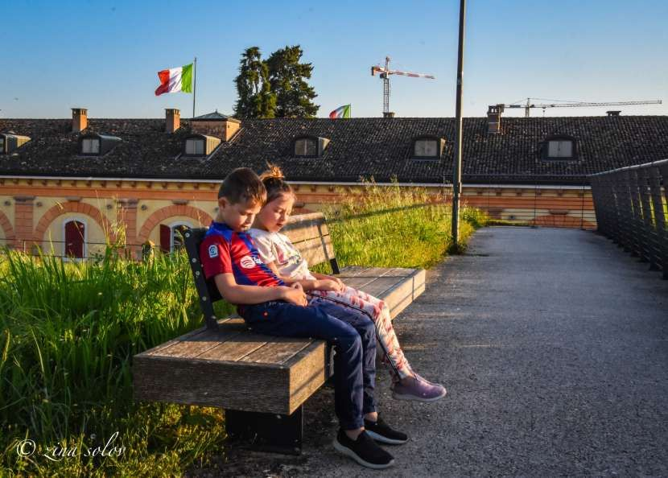
13.4- הגשם הורס לנו את התוכניות
את הגשם שמענו עוד באמצע הלילה, זה אחד מהחסרונות של הקראון, גם טפטוף נשמע כאילו יורד מבול.
קמנו לבוקר גשום, אם כי לא גשם חזק אבל טפטוף מעצבן כזה. לקחנו את הזמן והכנו ארוחת בוקר נחמדה אותה הפעם אכלנו בתוך הקרוואן.
התכנון להיום היה לנסוע לפארק המפלים במולינה ומשם להתמקם בקמפינג ליד מאלצ׳סינה. מבדיקה באפליקציית מזג האוויר נראה שיהיה טפטוף כל היום. טוב גם ככה אנחנו צריכים להצטייד באוכל, אז עצרנו בסניף קרוב של lidl להצטיידות זריזה. בזמן שהחצי יצא לקניות אני ניסיתי לתכנן לנו את הפעילות להיום, מבדיקה באתר של פארק המפלים נראה שהפארק היה סגור היום בגלל הגשם (איזה מזל שעדכנו באתר אחרת לנסוע לשם סתם זה די סיבוב).
טוב התלבטות, האם להתקדם למלצ׳סינה ולקות שמזג האוויר ישתפר? בתוך העיירה עצמה יש רק קמפינג אחד (התקשרתי והם לא ענו), שאר הקמפינגים נמצאים מחוץ לעיירה במרחק הליכה של קילומטר וחצי- שתיים מהעיירה, ביום יפה אין בעיה ללכת אבל במזג אוויר כזה מן הסתם לא נלך לסיבוב בעיירה, ופרט לקמפינג אין באמת איפה לחנות שם את הקראון (ממליצה לכל הקרוואניסטים להתקין את האפליקציה park4 night שמרכזת את כל החניונים/קמפינגים/אתרים שאפשר לחנות בהם), גם רכבל למונטה באלדו עדיין לא פעיל ונפתח רק ב-19 לאפריל (לא שהיינו רואים משהו במזג האוויר הזה). לכן, לאחר התלבטות ושקילת כל האופציות החלטתי לוותר על מאלצ׳סינה ולהתקדם לצפון האגם לכיוון ריבה דל גארדה.
שימו לב שגם בריבה עצמה אין באמת חניונים לקראון, אבל לידה בעיירה טורבולה יש שפע! בנוסף מהעיירה טורבולה ניתן גם לקחת מעבורת לריבה/לימונה/מלצ׳סינה כך שמכל בחינה עדיף להתמקם שם.
וכך יצאנו לדרך, שעה נסיעה חלקה בכביש אגרה, כשהתקרבנו לצפון האגם הנופים הפכו מרשימים יותר ויותר עם הרים נישאים ואגמים תחתם.
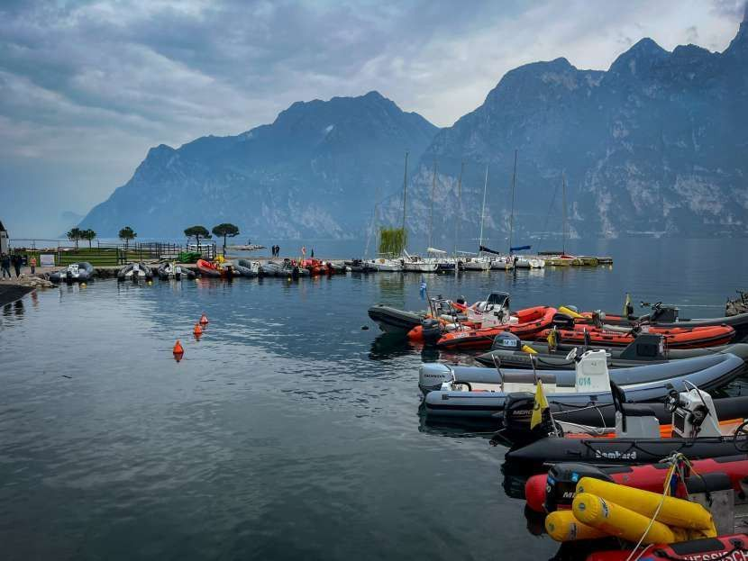
התמקמנו בקמפינג Camping Maroadi. מדובר בקמפינג מאובזר עם כל מה שתרצו כולל מכולת, פיצריה, אופניים למבוגרים שניתן לקחת חופשי ל-4 שעות, והקמפינג פשוט הומה אדם, כמעט בתפוסה מלאה, כאשר הרוב המוחלט של הנופשים הם גולשי רוח (ילדים ונוער עם הוריהם), אני מודה שמזג האוויר היה ממש לטובתם (ופחות לטובתינו), כנראה היתה תחרות כלשהיא, סביבנו היו בעיקר גרמנים ואוסטרים. הקמפינג עלה שלנו 90 יורו ל-2 לילות- החלטנו להשאר לפחות להיום ומחר כדי לטייל בסביבה.
התמקמנו לנו בחניה שלנו, התחברנו לחשמל ויצאנו לסקור את הסביבה. גם כאן הקמפינג ״כמעט״ על החוף, יש שער אחורי שיוצא ממש לטיילת\חוף של האגם, והנוף פשוט מהפנט! אבל קור כלבים בחוץ כך שחזרנו לקראון לאכול צהריים, ולהתלבש טוב טוב לטיול.
שבעים יצאנו לשוטט לאורך הטיילת עד למרכז העיירה טורבולה, הליכה של כקילומטר וחצי לכיוון, מזג אוויר סגרירי מאוד אבל למזלינו אין גשם, צפינו במלא ברווזים, גולשי רוח, וסתם תיירים כמונו. ליד מרכז העיירה ישבנו קצת לנוח ולתצפת על הנוף, ואז ראינו שהגענו כמעט עד למקום שממנו יוצאת המעבורת ללימונה, התלבטנו ממש אם לקחת אותה (יוצאת בעוד חצי שעה) אבל הילדים התחילו לקטר, ומזג האוויר ממש לא נראה מעודד כך שהחלטנו להסתפק היום בטיול הקצר הזה וחזרנו לקראוון למנוחה. העברנו את שאר היום במשחקים, טאבלט וסתם רביצה פאסיבית. בערב כבר פקעה סבלנותי והוצאתי את כולם לסיור סביב החוף לתצפית ברווזים.
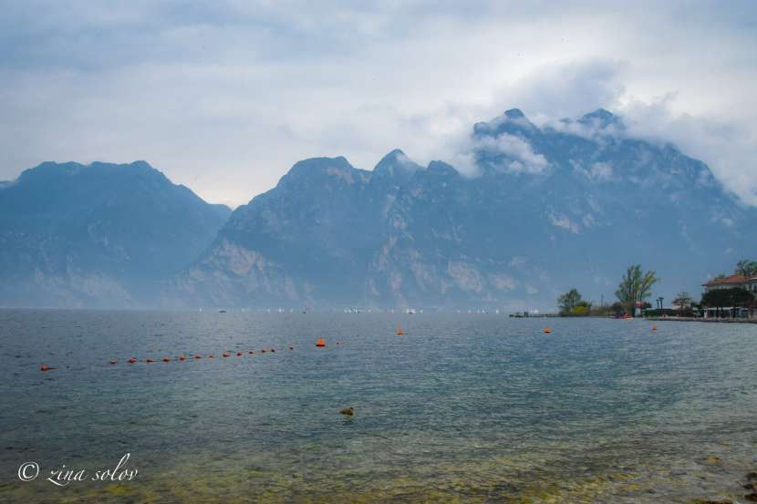
14.4.25: אופניים ו-17 קמ ברגל
עוד בוקר מטפטף, אבל התחזית היום יותר אופטימית, נראה שתכף יתבהר, סוף סוף אפשר לטייל בנחת.
הילדים שיגעו אותנו אתמול שהם רוצים אופניים אחרי שראו שפע רוכבי אופניים בטיילת, וכך יצאנו לאחר ארוחת בוקר לתור את העיירה טורבולה בחיפוש אחר חנות השכרה לאופניים. למזלינו יש כמה וכמה, בראשונה לא היו אופניים לילדים, אבל בשניה- Carpentari Bike Shop (במרכז העיר) היה בשפע, למזלינו נמצאו דגמים מתאימים לשני הצוציקים והחצי יחד איתם, אני החלטתי לוותר, אני כל כך גרועה באופניים שאין סיכוי שאצליח לרכב יותר מקילומטר בלי לדרוס מישהו או למצוא את עצמי באגם.
המוכרת בחנות ממליצה לנו לנסוע לריבה דל גארדה, זה כולה 3 קמ מכאן ויקח להם באופניים גג חצי שעה-40 דקות להגיע. אגב אפשר להשכיר אופניים לשעתיים או ל-5 שעות, אפשר גם לשלם לשעתיים ואם מתעכבים פשוט לשלם את ההפרש בהחזרה, וכך עשינו שכרנו לשעתיים בעלות של 10 יורו לאופניים, כאשר המוכרת אמרה שבטוח יקח לנו יותר כי המקום ממש יפה (בדיעבד היא צדקה).
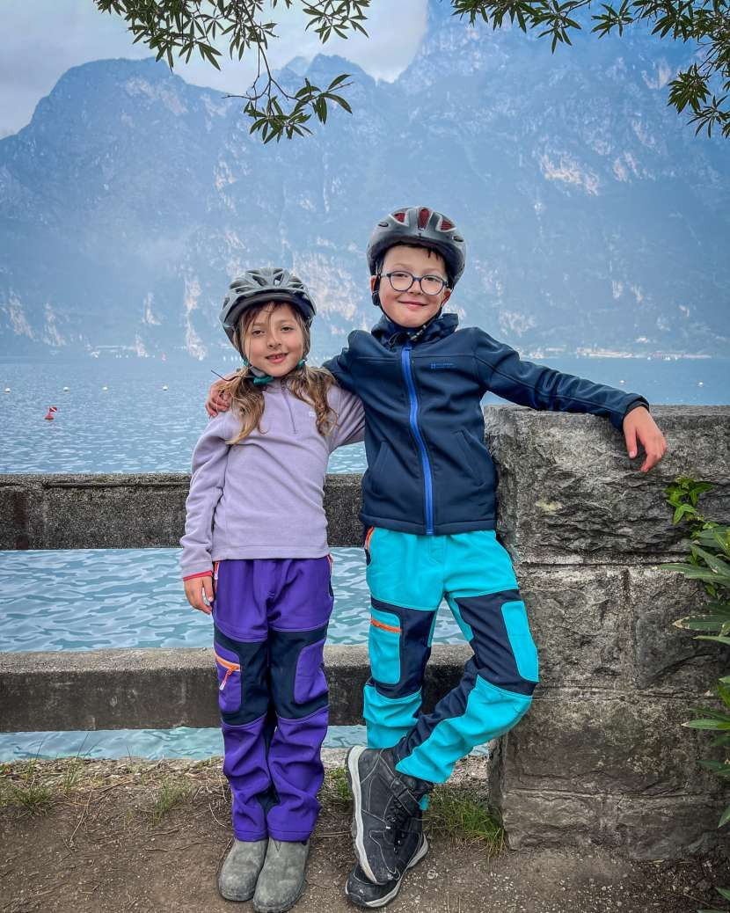
הצוציקים מאושרים, סוף סוף אופניים, יחד עם החצי הם יוצאים לדרך ואני אחריהם רגלית. יש שביל אופניים\הולכי רגל מקסים שמחבר את העיירות, השביל עובר לאורך האגם, ע״ג צוק ויורד לפארק מקסים בפאתי ריבה דל גארדה.
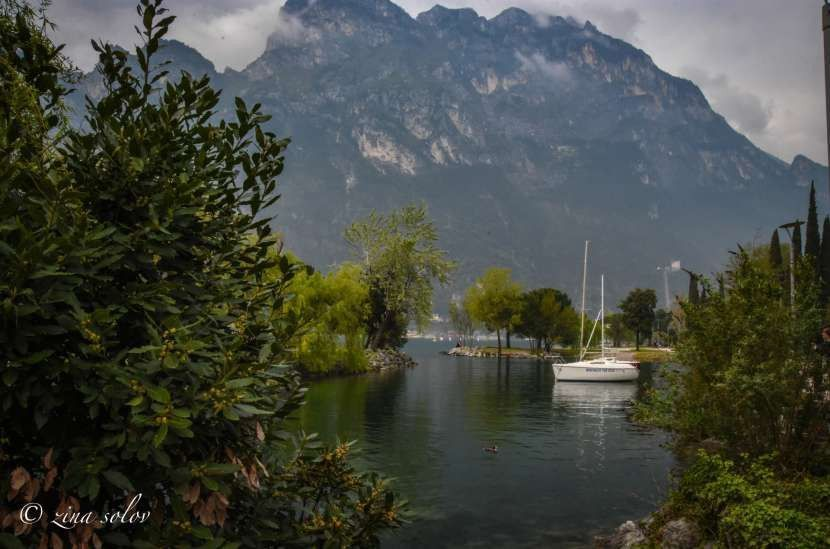
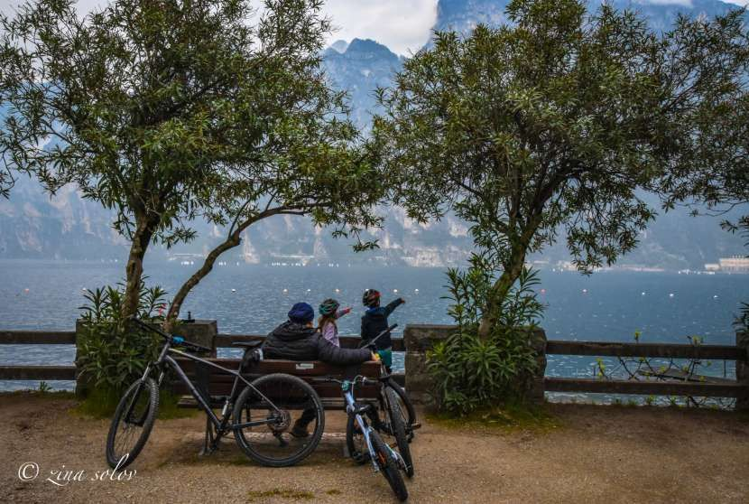
האמת גם ההליכה ברגל לא נוראית כלל, לשם שינוי מזג האוויר הקריר ממש נחמד לטיול כזה כך שאני צועדת לי בכיף ומתענגת על הנוף, אחת לכמה זמן הצוציק מגיע באופניים לוודא שהכל בסדר איתי, אנחנו עושים עצירות רבות לתצפית נוף כי הכל יפה כלכך.
בשלב מסוים נכנסנו לפארק משגע על שפת האגם, עצרנו למנוחה ותצפית ברווזים, החלטנו להתקדם עד למרכז העיר (עוד כ-קילומטר משם), כאן התפצלנו שוב כי שביל האופניים נפרד משביל הולכי הרגל, המשכתי לי בצעידה, עברתי עוד פארק יפה וכבר הגעתי ממש לכניסה לעיר העתיקה, אבל אין זכר לחצי ולצוציקים, ואז הטלפון מצלצל והחצי מודיע שצוציק עושה עוד סקנדל על משהו… טוב חוזרת קילומטר חזרה לפארק להיכן שנפרדנו, מרגיעה את הצוציק- או יותר נכון משחדת בגלידה שנמצאת ממש בהמשך (מזל שכבר עברתי שם אבוי לי אם לא היתה שם גלידה). הפסקת קפה, וגלידה, הראשונה שאנחנו אוכלים באיטליה, נחמדה אבל לא וואו כמו שמתארים.
הצוציק נרגע ואפשר להמשיך, מהסתכלות בשעון כבר עברו שעה וחצי, טוב, אז תהיה השכרה של 5 שעות.
הגענו לעיר העתיקה, חביב מאוד ונוף יפיפה אם כי אם לא באתם לשבת במסעדה\בית קפה או לעשות קניות אין כלכך מה לעשות פה, פרט לנוף כמובן.
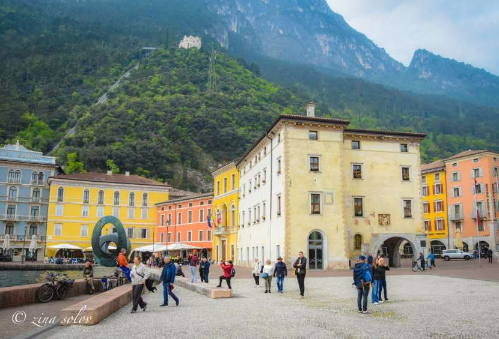
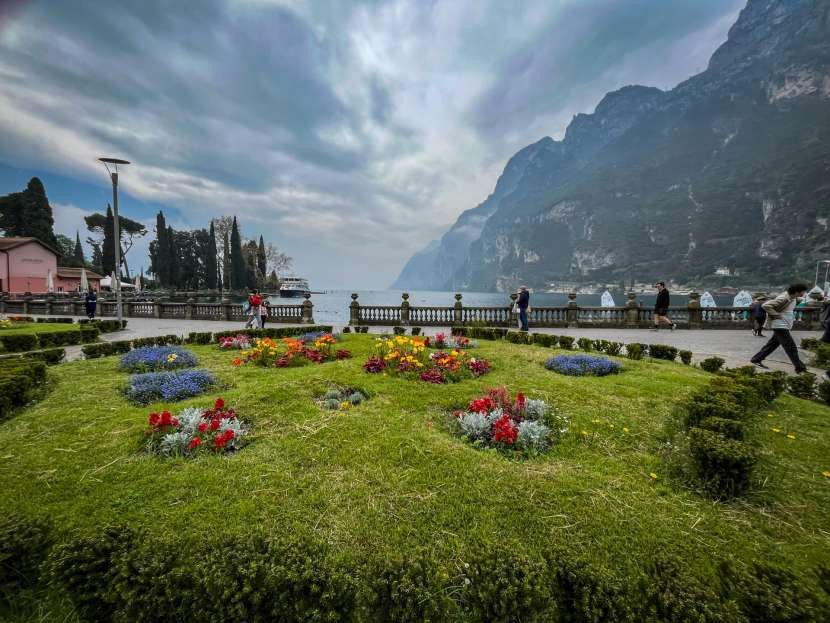
את הדרך חזרה החלטנו לעשות בלי עצירות, הם יתקדמו עד לקמפינג ויחכו לי שם ואני אגיע בקצב שלי. גם ההליכה חזור היתה תענוג, הנוף משגע ובאופן מפתיע אני הולכת די מהר כך שבחזור לקח לי פחות משעה להגיע לקמפינג.
השעה אחת בצהריים, ובאופן ספונטני החלטנו שמחזירים את האופניים, גם ככה במרכז העיר, אז למה שלא נמשיך משם למעבורת ללימונה? הרי אם ניסע להחזיר ואז נלך חזרה לקמפינג, אין שום סיכוי שבעולם שנצליח להוציא את הצוציקים לעוד הליכה עד למעבורת.
נעזרנו באתר המעולה שמראה מתי בדיוק יש מעבורת- https://www.navigazionelaghi.it/. המעבורת הקרובה יוצאת בשעה אחת חמישים, אין לנו הרבה זמן להחזיר את האופניים ולהספיק לעלות למעבורת, אנחנו על הקשקש. לכן החצי והצוציקין רוכבים ישר לחנות האופניים ואני צועדת לשם בקצב מהיר, אז מה שכבר הלכתי כ-10 קמ מהבוקר.
בדיוק כשאני מגיעה לחנות הם סיימו עם התשלום וההחזרה ויש לנו 10 דקות למעבורת, לפי גוגל מגיעים בדיוק על הדקה, איזה מזל שגוגל טיפה מגזים בהערכת הזמנים שלו, ההליכה מהחנות למזח לוקחת גג 7 דקות כך שיש לנו זמן לקנות כרטיסים ולחכות למעבורת. לרוע המזל נראה שחלה תפנית במזג האוויר והוא נהיה קר ונראה שיהיה גשום תכף.
אנחנו עולים למעבורת ששטה בין ריבה לטורבולה משם ללימונה ומשם למלצ׳סינה. אין טעם לנסוע גם ללימונה וגם למלצ׳סינה, העיקרון דומה, אולי בלי הילדים היה נחמד לשוטט בשתיהן אבל עם צוציקים עיירה אחת היא די והותר.
הפלגה נעימה של 25 דקות ואנחנו בעיירה הציורית לימונה, שהשוס שלה כשמה, הן הלימונים הגדלים בכל מקום ומקשטים כל פינה. כולנו מורעבים, וצוציק דורש לאכול לזניה איטלקית אמיתית, בדיוק כשאנחנו מתיישבים במסעדה, ארובות השמיים נפתחות ומתחיל מבול! טוב, אפשר לאכול בנחת עד שהמבול יירגע. מזמינים נאגטס לפיצקה, לזניה לצוציק ולנו המבורגר כי חשקה נפשינו. האוכל היה בינוני אבל צוציק נהנה מאוד מהלזניה שלו. כשאנחנו מסיימים לאכול הגשם עדיין ממשיך אם כי נחלש ומאפשר טיול בין הטפטופים.
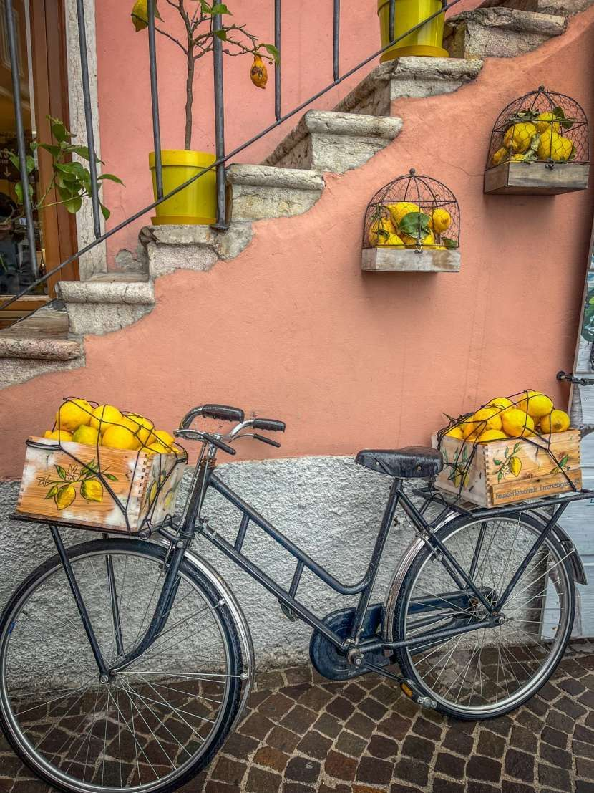
הסתובבנו קצת בשדרה הראשית, המשכנו לטיילת אבל לצערי בגלל העננים הנוף לא נראה כלל רק עננים אפורים. עצרנו בחנויות מזכרות והצטיידנו בכל מיני שטויות, גם ממתקים של של לימונה, סוכריות על מקל, שוקולד ודבש לימון (limomel)- הדבר הכי טעים שאכלתי אי פעם!!! וכמובן לימונצ׳לו. לא נראה שיהיה שיפור במזג האויר כך שאנחנו עולים למעבורת חזרה לטוברולה בשעה ארבע.
גם בטורבולה ממשיך לרדת גשם מעצבן, למזלינו, הצעידה חזרה לקמפינג עוברת מהר ויחסית עם מעט קיטורים. כשהגענו לקמפינג אני מנצלת את מכונת הכביסה שבמקום (אמנם רק יום 3 אבל כשיש קמפינג עם מכונת כביסה כדאי לנצל ולכבס מה שיש). בהסתכלות על שעון הצעדים שלי נראה שעשיתי היום 24 אלף צעדים השווים ל-17 ק״מ הליכה, אין ספק שכולנו הרווחנו את המנוחה שלנו היום.
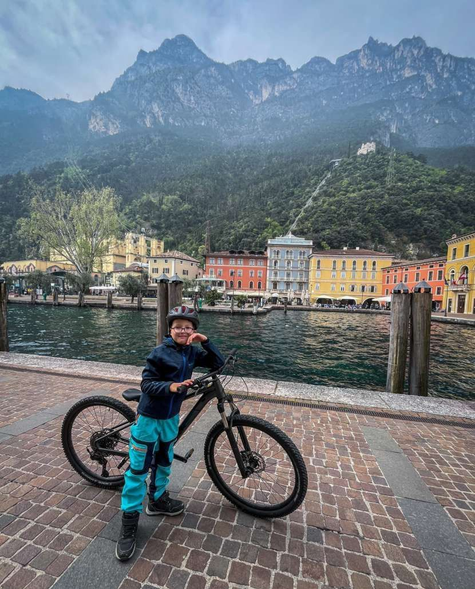
15.4.25 טבע גשום
גם הבוקר יורד גשם, לא חזק אבל טפטוף מעצבן. היום עוזבים את איזור גארדה ועולים צפונה. אחרי ארוחת בוקר אנחנו קופצים לסופר ליד להצטיידות נוספת, הגשם לא מפסיק לטפטף.
היעד להיום הוא אגם טנו, הנמצא כחצי שעה נסיעה משם, אני ממש מקווה שהגשם ייחלש עד שנגיע ונוכל לטייל שם. בדרך רציתי לעצור במפלי ורונה, שמעתי שזה לא אתר חובה אבל נראה נחמד ומתאים ליום גשום (אם כי נרטבים מהרסס של המפל), לפי אפליקציית park4night נראה שיש חניה קטנה ליד, כתבתי להם מייל והתקשרתי לברר אם יש חניה לקראוון אבל ללא מענה, בסוף החלטנו לא לנסות ולהסתבך עם חניה ונסענו ישירות לאגם טנו.
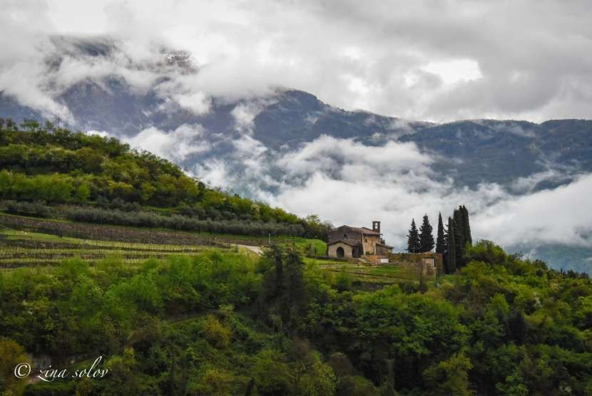
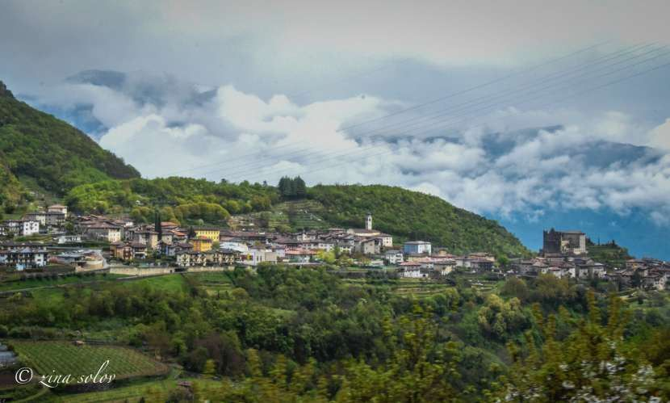
הדרך לאגם מדהימה ממש, הכל ירוק והעננים הנמוכים ממש נותנים מראה דרמטי לכפרים הפזורים על ההרים. אלוהי מזג האוויר ריחם עלינו וכשהגענו לאגם הגשם פסק. במקום יש חניה גדולה לרכבים רגילים וגם חניה לקראוון בעלות של 3 יורו לשעה, שימו לב שאתם מראש צריכים להחליט כמה זמן תהיו שם ולשלם בהתאם. בחרנו שעתיים כי נראה לנו זמן סביר להקיף את האגם ובטח כשכל רגע הגשם יכול להתחדש.
במקום יש גם קמפינג אבל הוא סגור בעונה זו.
מהחניה יש ירידה לאגם, ונגלה לנו נוף של גלויה, אגם טורקיזי עם הרים ירוקים סביבו ופסי עננים נמוכים פשוט יפיפה. ירדנו לאגם והתחלנו להקיף אותו (הרבה מסתפקים בירידה וצילום האגם, אבל דווקא ההקפה נותנת זוויות שונות של האגם שמרשימות הרבה יותר). טיילנו בנחת על השביל, מידי פעם ירדנו ממש לגדה, הצוציקים חיפשו כל מיני מזכרות לעצמם- אצטרובלים, מקלות, תולעים.
לקראת אמצע ההקפה הגשם חזר לטפטף אבל היה אפשר להמשיך לטייל, וכך הגענו לגשר התלוי, חוויה נחמדה אם כי יכלו למקם אותו בנוף טיפה יותר מרשים. מהגשר התלוי לחניה הדרך קצרה ממש, סה״כ כ-3 קילומטר הקפה.
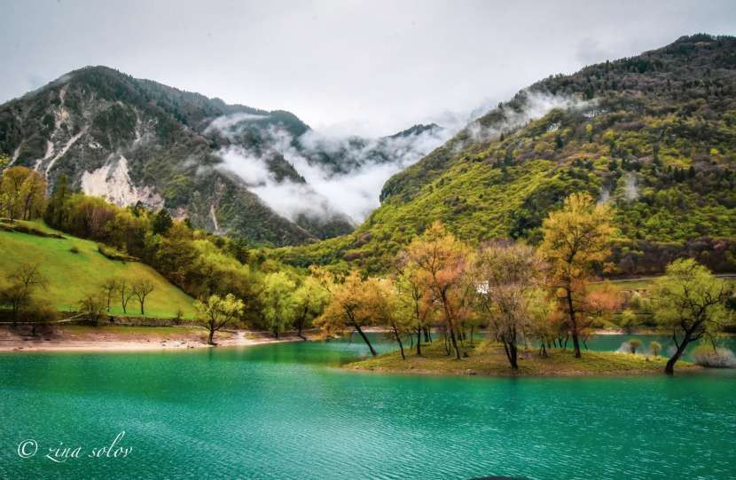
ממש חבל שיורד גשם כי חצי שעת הליכה משם אפשר להגיע לעיירה קאנולה דה טנו עם תעלות המים המרשימות שלה. אם היה יום יפה בטוח היינו הולכים, בגשם פחות נעים.
מזל שיש קראון כי אחרי הסיבוב בא לנו משהו חם ומתוק, מיד מכינים תה, מוציאים עוגיות והנה לנו נשנוש מפנק ליום קר.
מעיון באפליקצית מזג האוויר נראה שבכל צפון איטליה צפויים 3 ימי גשם. במקור תכננתי לנסוע מאגם טנו לכיוון אגם קלטרן ולישון שם לילה בכדי לעשות מחר מסלול בסביבה, אבל מדובר בקמפינג על גדת האגם ואני בספק שיש מה לעשות שם ביום כזה גשום.
כשתכננתי את הטיול, נתקלתי בקמפינג מומלץ Camping Steiner הנמצא בפאתי בולצאנו (ו-20 דקות מאגם קלטרן), יש אצלם בריכה פנימית מקורה הפועלת בעונה זו (רוב הקמפינגים עם הבריכות לא מפעילים עדיין את הבריכות שרובם חיצוניות ומיועדות לקיץ), כשהתכתבתי איתם עוד מהארץ לברר אם יש מקום פנוי אמרו לי שהם בתפוסה מלאה, אבל המליצו להיות איתם בקשר קרוב להגעה אולי יתפנה מקום, וכך בדיוק עשיתי, התקשרתי לקמפינג ולמזלנו יש מקום גם להיום וגם למחר! מצפה לנו נסיעה של כשעתיים עד הקמפינג, אבל אנחנו שבעים, הילדים כבר טיילו בחוץ כך שלגמרי אפשר לעשות את הנסיעה שרובה בכביש מהיר.
בדרך עברנו ליד עוד כמה אגמים אבל הילדודס היו כלכך שקועים בטאבלט שלהם שידעתי שלנסות ולהוציא אותם בכדי לראות עוד אגם יגמר בעוד סקנדל- ויש לנו מספיק מאלה גם ככה.
הגענו לקמפינג בשעה ארבע, כמו כל קמפינג גדול יש שם חנות (לא רעה אם כי יקרה), מסעדה (שמגישה פיצה החל מהשעה שש בערב ואפשר גם לקחת take away), בריכה פתוחה (שלא פועלת), בריכה מקורה (מושלמת למזג האויר הסגרירי), פינת משחקים ענקית לילדים בכל הגילאים- אומגה, מגלשות, נדנדות, טרמפולינה, פינג פונג ומה לא- קמפינג מושלם! (וגם הכי יקר ששילמנו 140 יורו ל-2 לילות אבל שווה כל יורו!). הקמפינג נמצא בעיירה levis שממש בפאתי בולצאנו, קיבלנו כרטיס נסיעה ציבורית חינם לשהות שלנו בקמפינג, וסביב העיירה יש שפע פרדסים שלצערי לא הספקנו לבקר בהם.
עם הרישום לקמפינג קיבלנו בקבוק של סיידר תפוחים מקומי שממש שדרג לנו את אורחת הערב המוקדמת. הצוציקים יצאו לחקור את המקום ולשחק בגן השעשועים של המקפינג, החצי פתח שולחן פיקניק ואת הגגון ונח לו, ואני מיד מאלתרת ארוחת ערב מוקדמת. הבריכה עובדת עד השעה שמונה בערב, כך שבשעה שש שבעים ומרוצים אנחנו הולכים לטבילה, המים לא חמים אבל האוויר מחומם מאוד כך שאפשר לשחות בכיף אם כי ריח הכלור ממש חזק, מהבריכה ישירות למקלחת שצמודה אליה. היה לנו עוד זמן למשחק קלפים לפני השינה- כאמור מסורת הטיול.
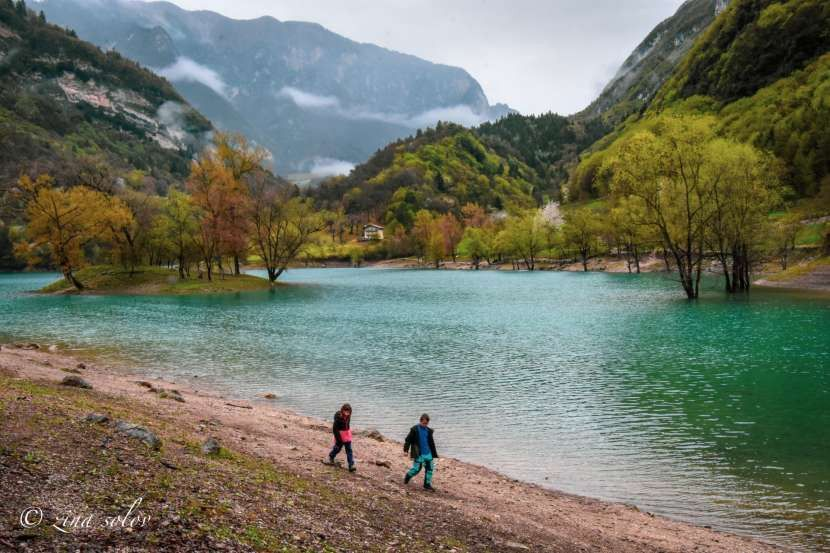
16.4.25: יום מוצלח בטבע
שוב היה גשם בלילה וגם הבוקר מטפטף, אבל מעט אופטימיות כי לפי התחזית בסביבות עשר הגשם ייפסק. לכן אנחנו מחליטים להיצמד לתוכנית המקורית ולנסוע לעשות את המסלול Rastenbachklamm. מדובר בקניון מרשים שנמצא בהרים מעל אגם קלטרן, מסלול עם גשרים, מפלים ונוף יפה. העניין הוא שלא הצלחתי להבין אם ניתן להגיע לחניון ממנו יוצא המסלול עם הקראוון. במקור תכננתי לקחת אוטובוס מקלטרן שמוביל למסלול אבל הוא נוסע רק 3 פעמים ביום, אחר כך ראיתי שלא רחוק מהמסלול יש פארק חבלים ולידו יש חניה גדולה, מפארק החבלים לתחילת המסלול זה בסה״כ קילומטר, לכן החלטנו לנסוע עם הקרוואן ובמקרה והכביש למסלול לא יהיה עביר פשוט נחנה ליד פארק החבלים.
גוגל מפות לקח אותנו דרך פיתולי הרים, מסביב כרמים ללא סוף שפע מטורף של כרמים, מדובר באזור חקלאי מלא ביקבים שונים.
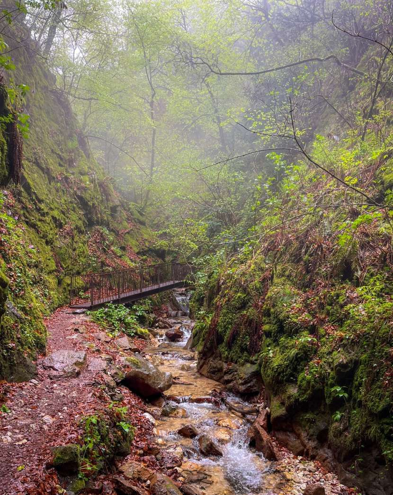
אחרי נסיעה של כחצי שעה הגענו לפארק החבלים ולכביש שמוביל מעלה לכיוון המסלול, יורד מבול, ערפל, אבל הכביש די רחב ולגמרי אפשר שקראוון יעבור בו. אנחנו ממשיכים עד לחניה הקטנה של התחלת המסלול, למזלינו היא די ריקה ויש מקום לחנות קראון קטן כמו שלנו (לדעתי קראוון גדול לא יכנס שם), רק חנינו ומיד מאחורינו חנה גם קאמפר וכך תפסנו את כל הפינות האפשריות לחניית רכבים גדולים, נשאר מקום רק למכוניות.
מה עושים? יש גשם, אמנם נחלש בהדרגה אבל עדיין גשום, לקחנו את הזמן, נישנשנו קצת, שתינו תה וכשארינו שהטפטוף ממש פחת יצאנו לדרך.
התלבשנו חם כי למעלה בתוך היער ממש קר והתחלנו לצעוד לפי סימון אדום, שימו לב כדאי ממש להשתמש באפליקציה mappy.cz אפליקציה שהכרנו בשנה שעברה בטיול בצ׳כה ומאז משמשת אותנו כמעט בכל מסלול בחו״ל, היא מראה לך ממש במדוייק את המסלול כך שבעת פיצולים שלא בטוחים לאן להמשיך, כדאי להציץ בה ולוודא שאתם בדרך הנכונה.
כאמור המסלול התחיל בתוך היער, אחרי הגשם והעננים הנמוכים התחושה כאילו אנחנו הולכים בפארק היורה, יורדים אט אט לתוך הקניון, ההרים מעלינו מלאי צמחיה, פכפוך הנהר, ציוצי ציפורים ומפעם לפעם טיפות שנופלות עלינו. מדובר במסלול לא ארוך סה״כ 2.5 קמ אבל הוא מלא בעליות וירידות. אחרי צעידה בקניון משגע בו ראינו מפלים בשפע, אנחנו יורדים למטה לראות מפל אדיר, משם מדרגות מובילות אותנו לתצפית הראשונה- גם של אגם קאלטרן וגם של המפל מלמעלה, פשוט אין מילים לתאר את היופי.
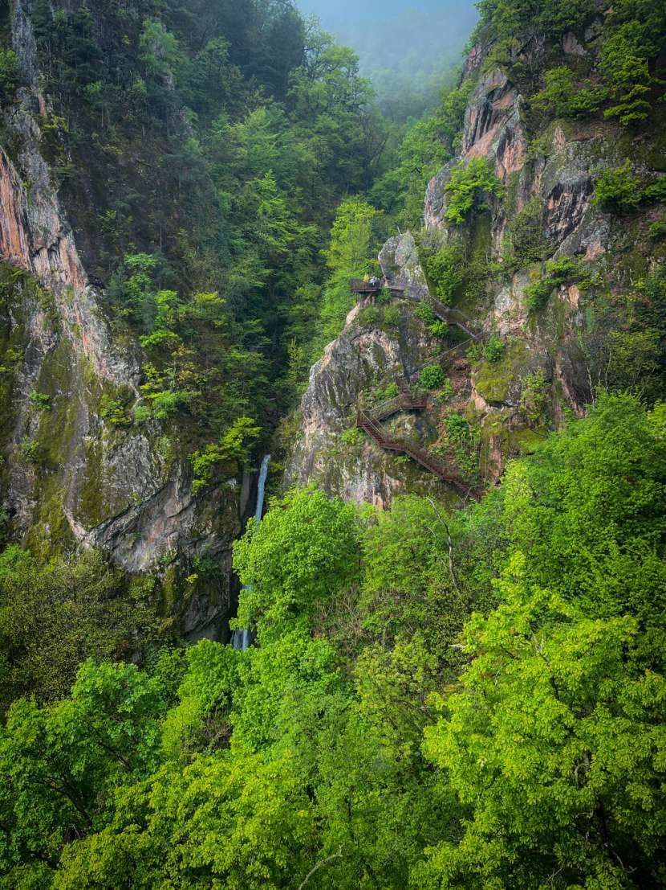
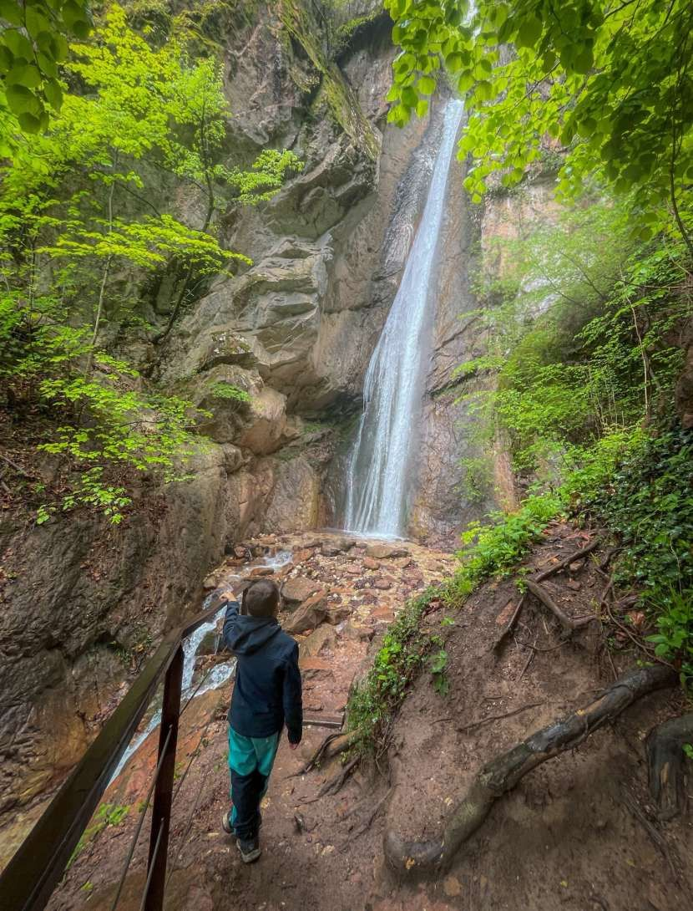
ברגע שיצאנו מהיער הגשם התפזר ונהיה ממש חם, לאט לאט אנחנו מקלפים שכבות. כך צעדנו סביב התצפיות לאגם. כאמור השביל מעגלי ובשלב מסויים צריך לעלות חזרה להר כדי לחזור לרכב, פה כבר העליה יותר קשה ומאמצת (אבל לא סוף העולם), אנחנו שולפים את הנשק הסודי שלנו למניעת קיטורים- הסוכריות על מקל שקנינו בלימונה. כולנו עסוקים בטעמן הנפלא כך שהצלחנו לעלות די הרבה בהר עד שהן נגמרו, עוד 600 מטר מאמץ לפי האפליקציה ויצאנו לתוך יער משגע, קצת זריקת עלים והגענו חזרה לרכב. לסיכום מסלול מדהים שלדעתי רבים מוותרים עליו כי לא מגיעים לאיזור וחבל, הוא לא ארוך ולא קשה מידי ומאוד מתגמל! לקח לנו משהו כמו שעתיים וקצת בקצב מאוד נינוח.
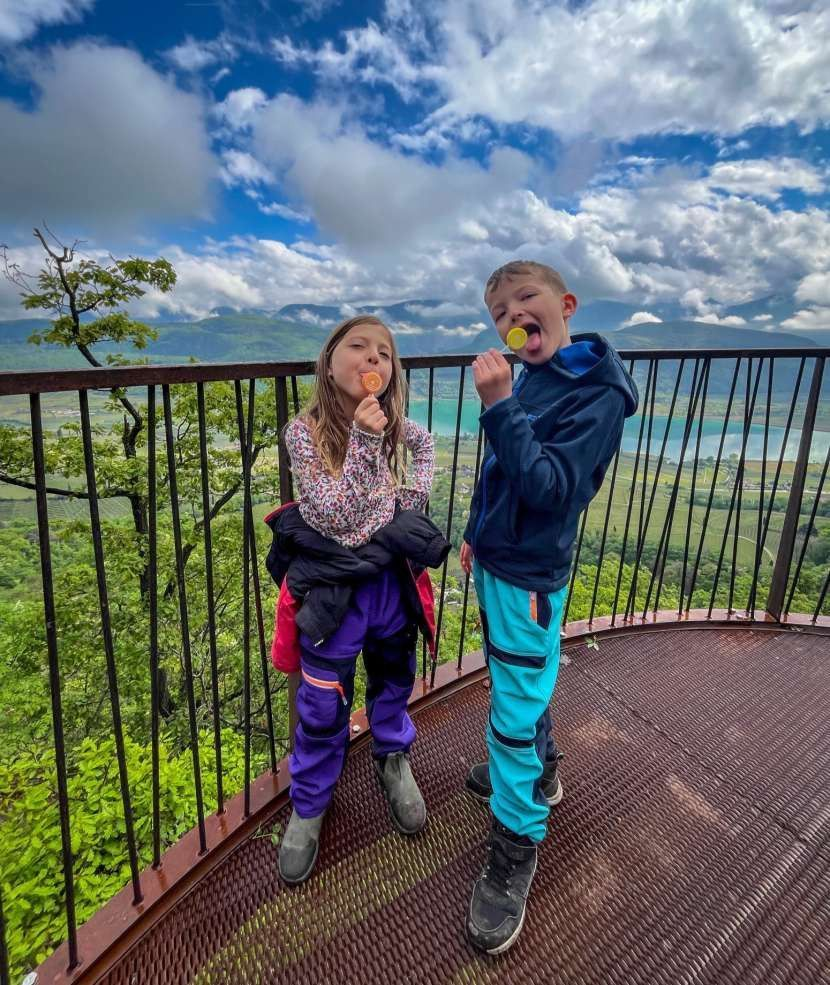
החלטנו לפנק את הילדים בפארק חבלים, כל עוד לא יורד גשם שיהנו. הפארק נמצא בהמשך הכביש לכיוון העיירה קלטרן, ונפתח לפעילות רק לפני כמה ימים (היה בתרדמת חורף). קיווינו נורא שהילדודס יעשו את המסלולים לבד (לפחות אלה שברמתם) אולם הם נדרשים בליווי מבוגר במסלולים עצמם, טוב נו כרגיל אני מתנדבת ונותנת לחצי זמן מנוחה בעוד שאני מקפצת כמו קוף בין עצמים אחרי הצוציקים שלא רואים אותי ממטר, נראה לי אני צריכה ליווי שלהם ולא הם צריכים את הליווי שלי.ֿ
לאחר שעתיים ואין ספור חבלות שלי סוף סוף הצלחתי להוציא אותם משם, החצי בינתיים הכין ארוחת צהריים מפנקת, הנה עוד יתרון של הקראוון, לא צריך לנסוע לחפש מסעדה עכשיו כשכולנו רעבים אלא האוכל כבר מוכן ומזומן.
שבעים ומרוצים מיום טיול מוצלח חזרנו לקמפינג, החלטנו להתפנק בפיצה לארוחת ערב כך שהלכתי להזמין לנו take away, שוב התחיל הגשם אבל אנחנו מיד הולכים לבילוי ערב בבריכה, כרגיל מקלחת מיד לאחר מכן, ואז ערב עם פיצה ומשחק קלפים, היום זה היה יום מוצלח!
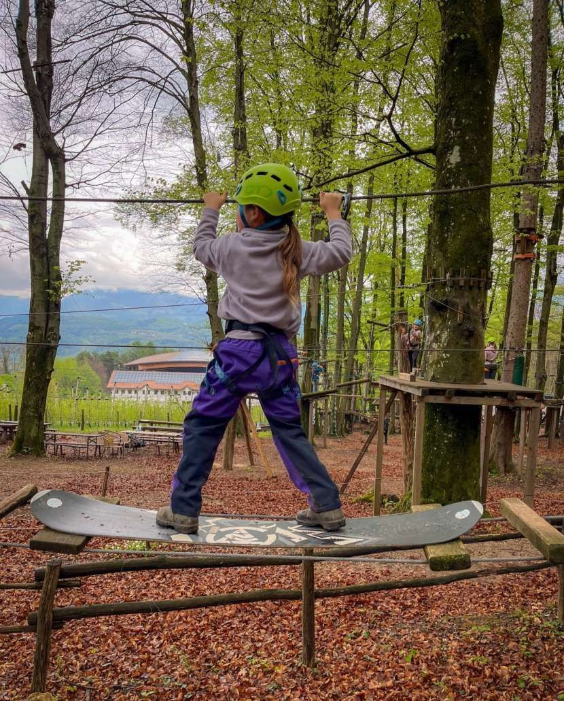
17.4.25 גשם זלעפות
היום כל כך גשום שאפילו התחזית התייאשה, אין פינה באזור שלא יורד בה גשם. משכנו את הבוקר בקמפינג, גם ככה יש לנו עד 12 לצ׳ק אאוט. מתפנקים עם ארוחת הבוקר, אחר כך בילוי בבריכה, מקלחת, ארגון הקראוון בנחת וב-12 אנחנו יוצאים לדרך.
תחנה ראשונה- השלמת קניות בסניף lidl בבולצאנו, רק מסיבוב בפאתי העיר הבנו שאין סיכוי שנכנסים לכאן עם קראון, אבל את הקניות הצלחנו לעשות. האפשרויות שלנו הן להמשיך בתוכנית המקורית ולנסוע לדולומיטים לעיירה סנט מגדלנה, בידיעה שאת היום נעביר כנראה בתוך הקרוואן ולקוות להפוגות, או לנסות לנסוע למרחצאות החמים במארן ולהעביר שם כמה שעות ומשם לסנט מגדלנה (לפי התחזית, מחר אמור להתבהר).
באופן מפתיע אף אחד לא זרם על מרחצאות חמים, אולי כי רק יצאו משעתיים של בילוי בבריכה, לכם החלטנו על אופציה 1- נסיעה לסנט מגדלנה ולקוות לטוב.
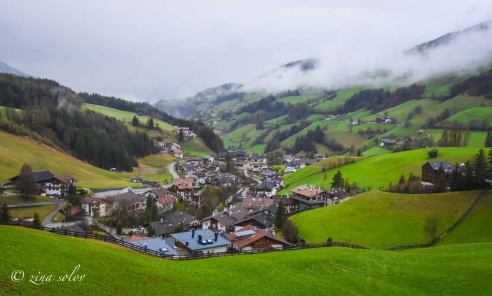
לפי גוגל מפות מדובר בנסיעה של כשעה, רק פרט קטן שלא ראינו הוא שהמסלול שגוגל מציע עובר דרך עיירה קטנה בהרים. התחלנו לעלות על ההר, הנוף משגע, הכל נראה תמים ופסטורלי עד שהגענו לעיירה ולרחובות שאין סיכוי לעבור בהן עם קראוון. רגע, לא הגיוני, הרי משאיות כן עולות לדולומיטים. עשינו זום אין וגילינו שגוגל ניסה לקצר לנו את הדרך, יש דרך אחרת (טיפ- תסתכלו אם אתם רואים תחנות אוטובוס במסלול, זה אומר שהדרך עבירה לקראוון) רק עכשיו צריך לרדת את כל ההר, להמשיך מעט צפונה ואז שוב לעלות. קלי קלות לא? וכל הזמן הזה הגשם לא מפסיק לרדת.
התחלנו שוב בעליה לדולומיטים, כרי דשא ירוקים מלאי ניצני פריחה, כפרים חמודים סביב, נחלים זורמים וכמובן גשם שגורם לכל להראות אפרורי וכמובן ללא הרים כלל כי כולם מכוסי עננים.
הגענו לעיירה סנטה מגדלנה לאחר כשעה וחצי נסיעה (כולל ברבור), פנינו לקמפינג שקראתי עליו הרבה המלצות- Stellplatz zum Gletscher Hons, רק שזה לא באמת קמפינג אלא יותר כמו חניון קראונים עם שירותים (שירותים, מקלחת, שטיפת כלים) ונוף מדהים- גם בגשם.
מדובר בחווה, שהזוג המבוגר הסב לקמפינג, יש להם חיות ופינת ליטוף (שלא פעילה עכשיו), יש אפילו חנות קטנה שהם מוכרים מוצרים שלהם- ריבה נקניקים וכו.
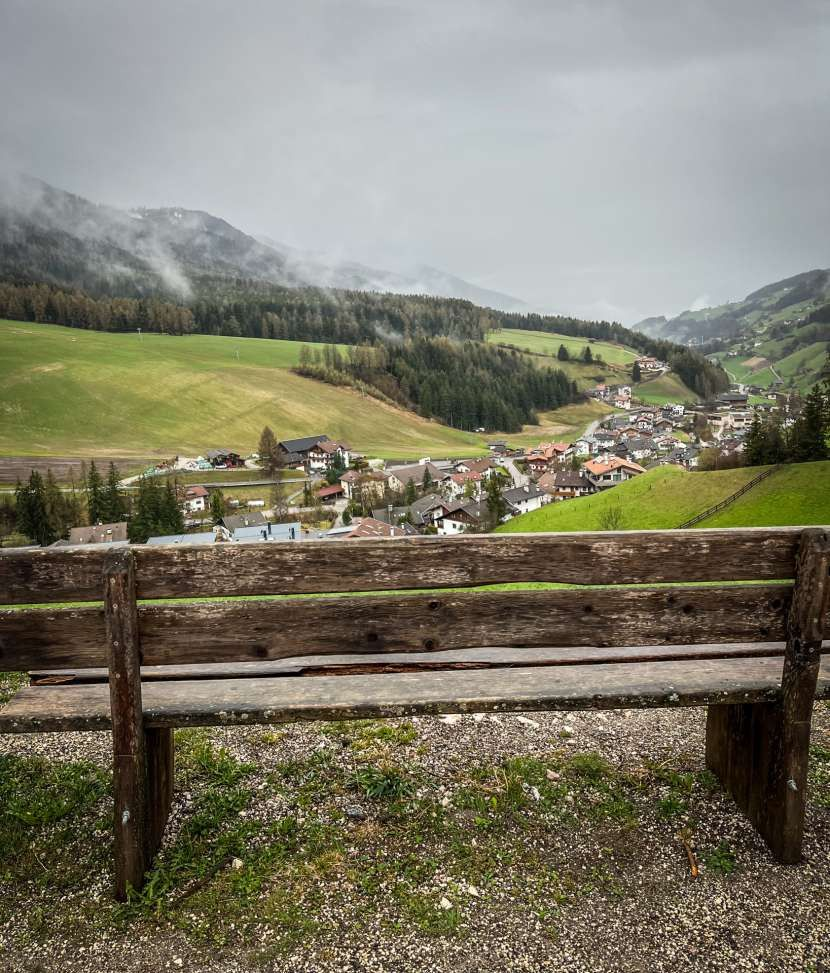
הכנו צהריים התיישבנו למשחק קלפים, לקראת השעה ארבע חלה התבהרות שניצלנו אותה לשיטוט סביב הקמפינג, באמת הנוף פשוט משגע, אבל לא ירדנו לעיירה גם כי הצוציקים היו במצב רוח בכייני ביותר וגם כי פחדנו להיתקע במבול. החצי לפחות זכה לחצי יום מנוחה מלאה.
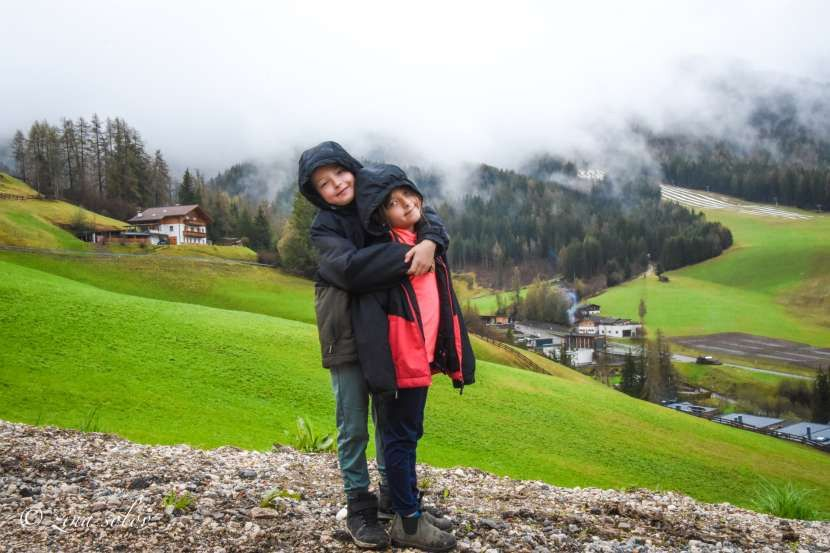
18.4.25 הדולומיטים הנסתרים
אחרי לילה שלא הפסיק לרדת גשם, צלצול פעמוני הכנסיה (שנמצאת 100 מטה מאיתנו) שצלצלו כל 15 שעה! סוף סוף הגיע בוקר ואיתו התבהרות, וואו אחרי 3 ימי גשם איזה הקלה סוף סוף.
אכלנו אורחת בוקר ומיד הוצאתי את כולם להליכה לכיוון התצפית הפנורמית של סנטה מגדלנה- התמונה האייקונית של הכניסה על רקע הדולומיטים.
הכל ירוק ורענן מסביב, הכנסיה נמצאת 5 דקות הליכה מהקמפינג, כמובן שגם הליכה זו גררה אין סוף קיטורים. כשהגענו העננים זזו קצת הצידה וזכינו לראות את ה״אצבעות״ של הדולומיטים מציצים מבעד לעננים.
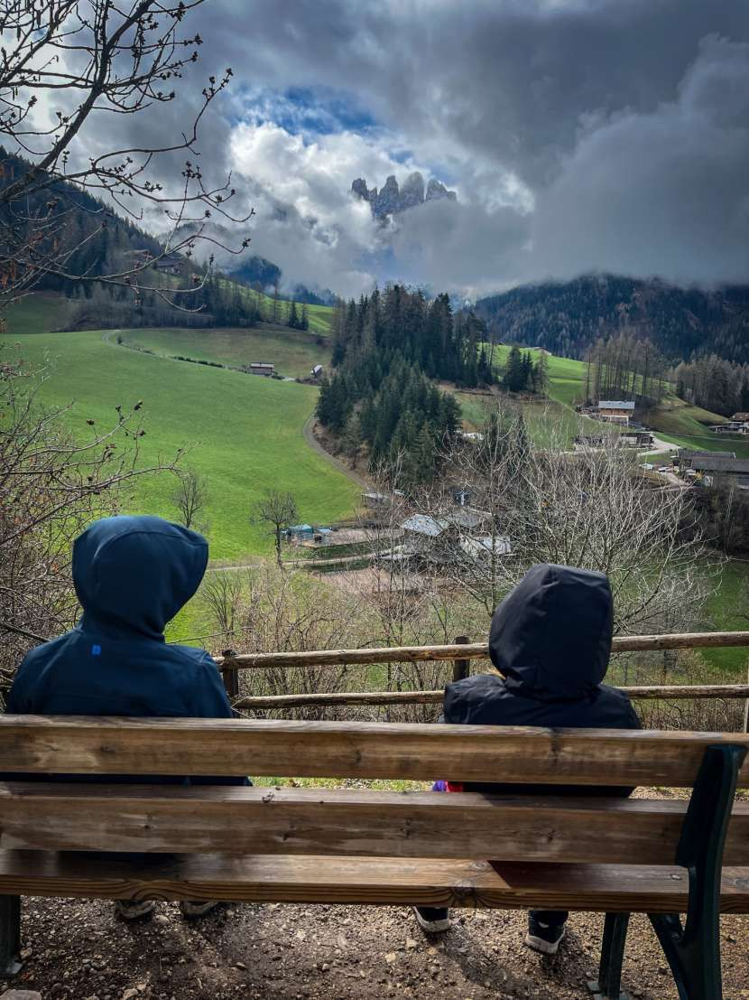
נורא קיוויתי שהעננים יזוזו עד שנגיע לתצפית אבל לא, הדולומיטים מכוסים בעננים שמסרבים להתפוגג, כל זה עדיין לא גורע מהיופי של המקום, כרי דשא ירודים, הרים מושלגים מכוסי עננים וכמובן ניצני פריחה צהובה של חרציות, אפילו הצוציקים הפסיקו לקטר לזמן מה.
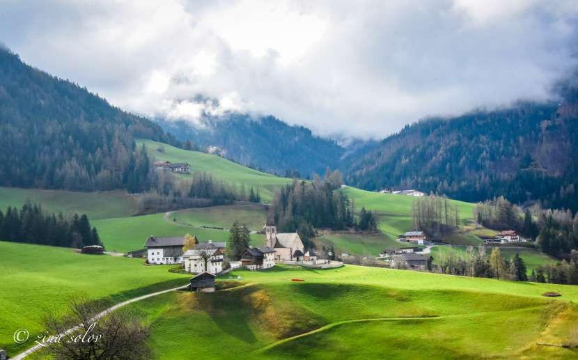
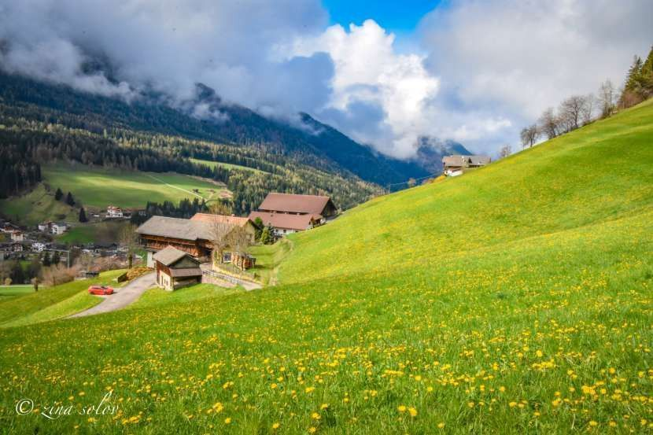
חזרנו לקמפינג בשעה 11 (לצערי לא היה לנו זמן לסיבוב ארוך יותר וחבל כי יש שפע מסלולי הליכה מקסימים במקום). רציתי לנסוע למסלול אדולף מונקל או זאנס אבל בעלת הקמפינג אמרה שאי אפשר, הכביש מושלג והמסלולים יפתחו רק בסוף אפריל.
אחרי שעזבנו את הקמפינג יוצאנו לתור את הדולומיטים, התכנון הוא לעשות את הלולאה של אורטיזיי משם למעבר סלה ולסיים באזור אגם קאראזה או אלפ סיוזי. יצאנו לדרך לכיוון אורטיזיי, עדיין הגשם מטפטף לפרקים אבל כבר אינו מטריד. סביב אורטיזיי אין כל כך חניות לקראוון, לא רחוק משם יש מסלול מקסים (לפי התיאורים) שנקראה וולונגה vallunga, אבל לא הצלחתי להבין אם בכלל אפשר להגיע עד לשם עם הקראוון, כי לפי גוגל מפות נראה שהכביש לשם ממש צר וגם באפליקצית park4night לא נראה שיש שם חניה בכלל.
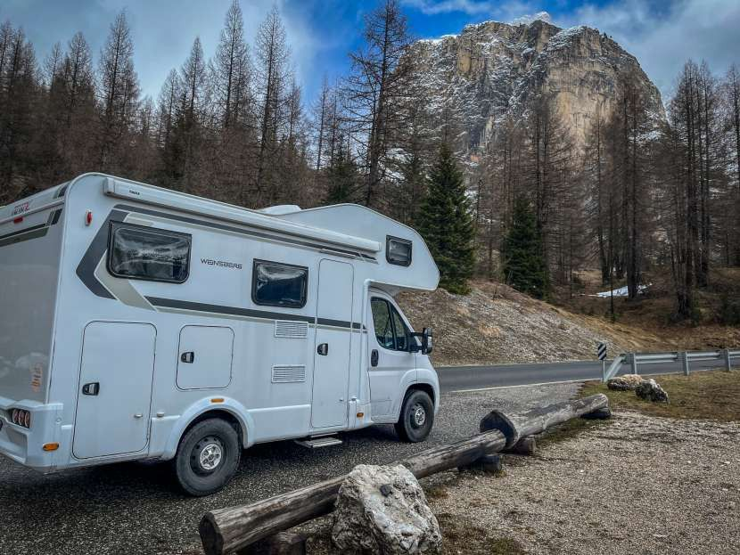
החצי גם ככה החליט לוותר ונסענו ישר למעבר סלה. ככל שמתחילים לעלות, כמות השלג מתרבה ומצד שני העיירות הופכות לנטושות יותר ויותר. עצרנו ליד מסלול סקי עם שאריות שלג- הילדודס רצו לשחק (הם עוד לא יודעים שלמעלה יש שפע שלג), המשכנו לעלות וכמות השלג מתרבה, ככל שמתקרבים לפסגה אנחנו מוקפים שלג! עצרנו בפסגה, ליד מלון שסגור כעת (ויש לנו מלא חניה) ויצאנו לשחק בשלג. השלג די עמוק ובמקומות מסויימים מגיע עד הברכיים ממש. הצוציקים בעיניים ועוד יותר כשמתחיל לרדת שלג!
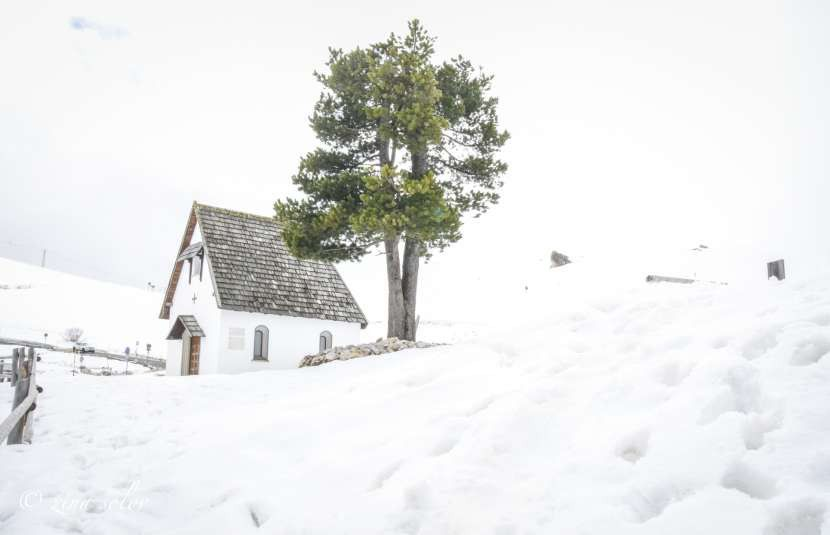
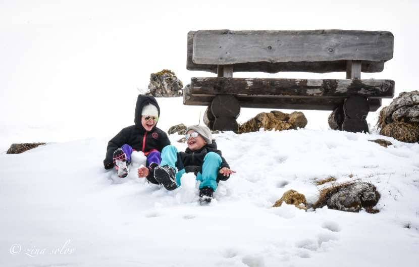
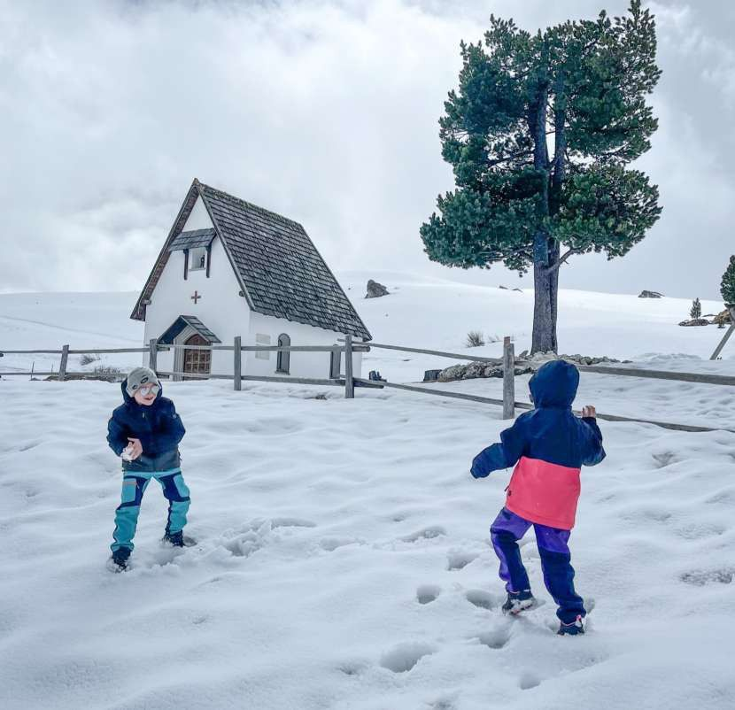
עשינו הפסקה מהשלג לטובת ארוחת צהריים בנוף מושלג משהו- עוד יתרון של הקראוון כי לא נראה לי שבעונה הזו נמצא מסעדה אחת פתוחה בסביבה. אחרי הארוחה יצאנו עם הילדודס לעוד סיבוב בשלג, חזרנו לקראוון רטובים לגמרי, כולל הנעליים העמידות מים שלנו (כשהשלג עד הברכיים, אין סיכוי שלא יכנס שלג לתוך הנעל ולכן הלך הבידוד). מזל של פיצקה שלה יש עוד זוג נעליים -בלנסטון, לצוציק יש רק נעלי הליכה קלילות.
מחליפים גרביים בפעם ה-3 היום וממשיכים בסיבוב שלנו. לצערי בגלל העננות לא רואים את היופי של העמק למטה, אבל מצד שני יש שלג!
לאט לאט אנחנו יורדים ממעבר סלה המרשים ממש, ומתקדמים לכיוון תחנת עצירה נוספת במפלים-Cascate Schiavaneis, יש חניה קטנה בסמוך ומשם הליכה של כ-10 דקות עד המפלים. לפי ביקורות בגוגל המקום נראה ממש מרשים וגם חיה שם מושבת בונים שניתן לפעמים לראות אותם. כל זה כאמור בקיץ, אולי, עכשיו המסלול מכוסה שלג. עדיין החלטנו לצאת ולחלץ קצת אבירים בעיקר כי נראה שמדובר הליכה קצרה. התבדינו, הליכה בשלג כלל לא קצרה, ומאוד מאתגרת. בשלב מסויים לא ניתן להבדיל בים הגדה לנהר שזורם מתחת לשכבת השלג, שומעים את שאון המים אך לא רואים אותם, את המפל רואים יורד מצלע ההר, אבל עדיין במרחק כך שאי אפשר באמת להתרשם ממנו, הנעליים של הצוציקים רטובות לגמרי- הם מתעקשים לדרוך בשלג העמוק….
טוב זה השלב שעשינו אחורה פנה- רק מה שחסר לי זה שבטעות ידרכו בנחל עצמו שמתחת לשלג.
משם אנחנו ממשיכים לרדת לכיוון העיירה קאנזיי, לצערי עדיין לא רואים הרבה מהדולומיטים המכוסים בעננים. קאנזיי היא עיירה שוקקת (בעונה) יש לה קמפינג, משחקים לקטנים, בריכה מקורה ומה לא- רק שעכשיו בעונת המעבר הכל אבל הכל סגור, כולל הקמפינג. היות ועשיתי שיעורי בית אני יודעת שהקמפינג הקרוב באיזור הוא ליד אלפ סיוזי- עוד שעה וחצי נסיעה, אבל יש הרבה מקומות עצירה לקראון שאפשר להעביר לילה בחניה יבשה. החלטנו לא להתקדם עד אגם קאראזה היום, כבר חמש בערב, עד לשם זה עוד כשעה נסיעה, ומזג האוויר שוב התקלקל והגשם חזר.
עצרנו בעיירה פוזה דל פוסה, העירייה עשתה חניון בכניסה לעיירה עבור קרוואנים, יש מקום ל-4 רכבים וניתן לחנות שם בחינם, אבל שימו לב, הכוונה לחנות- אסור לפתוח מדרגה, להוציא כסאות או כל רמז לקמפינג, והמשטרה מגיעה כמה פעמים ביום לבדוק ולתת קנסות.
התמקמנו בנחת, החניון ממש ליד מכבי האש והנהר שזורם לאורך העיירה, אבל הגשם לא חדל כך שאנחנו מנצלים את הזמן למנוחה קלה. החלטנו לנצל את הקרבה לעיר ולחפש פיצרייה, קצת נמאס לבשל ובא לנו משהו קליל. בחיפוש בגוגל נראה שיש 2 מסעדות במרחק של 5-8 דק הליכה מאיתנו שפתוחות, טוב 5 דקות אפשר ללכת בגשם (זה טפטוף ולא מבול), הצוציק המסכן הולך עם נעלי הבד שלו כי נעלי ההליכה רטובות לגמרי!
יצאנו לסיבוב לחפש את המסעדות רק כדי לגלות עיירת רפאים, הכל סגור, כולל המסעדות האלה. הסתכלתי על מסעדות של מלונות בסביבה שסגורים גם כן. איזה אכזבה, בעיקר אני כועסת על גוגל שלא היה מעודכן. חזרנו לקראון והחצי הכין ארוחת ערב משובחת, אפילו צוציק אמר שהצלעות היו הרבה יותר טעימות מפיצה! רק פיצקה פתחה בשביתת רעב. עוד ערב גשום ללא הפסקה כך שאנחנו מבלים בקראון בעוד טורניר קלפים.
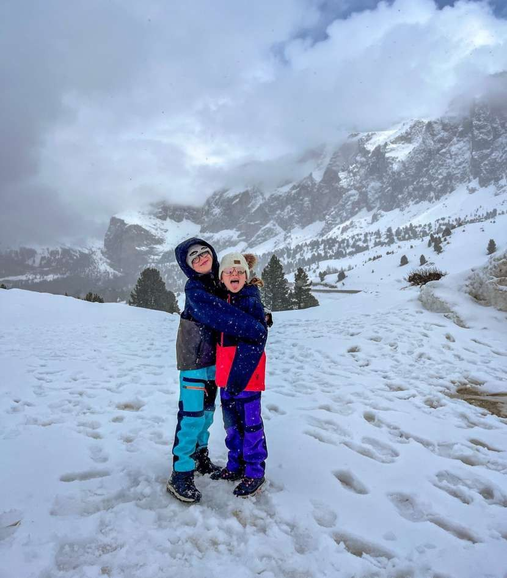
19.4.25- בחזרה לקלטרן
עדיין גשום וסגרירי בבוקר, אבל אחרי ארוחת בוקר הגשם פסק ויצאנו סוף סוף לחקור את הסביבה. הטיילת סביב הנהר ממש מקסימה, נופי ההרים מדהימים (מה שניתן לראות לפחות מבעד לעננים המכסים את ההרים). אחרי סיבוב קצר המשכנו בדרכנו לכיוון אגם קאראזה, בדרך חולפים במעבר קאראזה ונהנים מהיופי של ההרים.
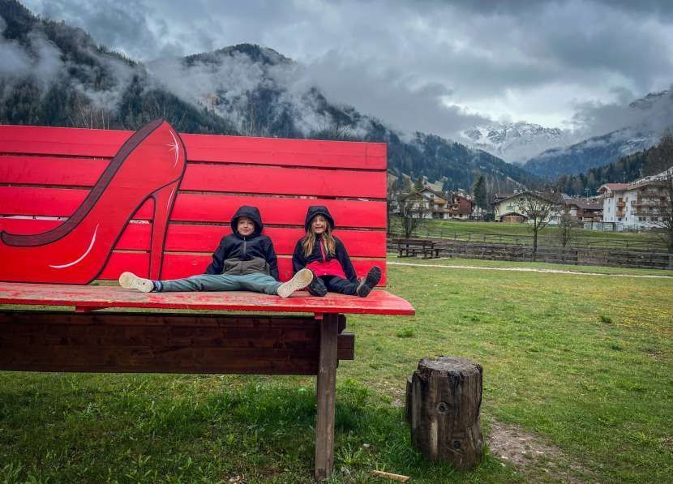
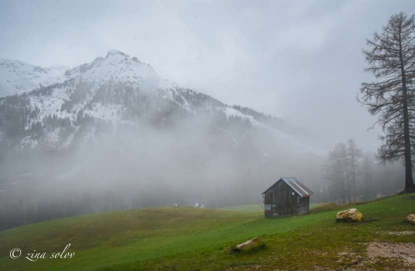
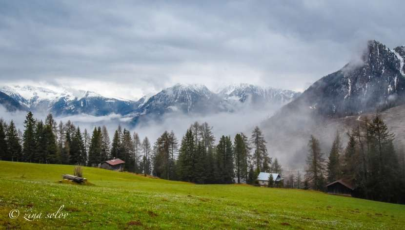
סביב האגם יש חניה מסודרת גם לרכבים וגם לקראוונים, לא זולה כלל 3 יורו לשעה לקראוון. המעבר לאגם עובר מתחת לכביש הראשי אבל יש שם חנות מזכרות גלידה ושירותים. לא כל כך קר היום אם כי מאוד סגרירי וגשם מטפטף לפרקים.
למרות הסגריריות הצוציקים ביקשו גלידה אז קנינו להם גלידה ולנו בייגל וקפה, בסוף הם אכלו את הבייגל ואני נאלצתי לסיים את הגלידות….ירדנו לאגם שצבעו ממש יפיפה, אבל הוא עדייין לא מלא (רק הפשיר לא מזמן), ההשתקפות של העצים מקסימה אבל לא רואים את השתקפות ההרים בגלל העננים. המקום הומה אנשים ולכן החלטנו לוותר על הקפת האגם- גם כי מעונן ולא רואים את הנוף המרשים וגם כי המוני מידי.
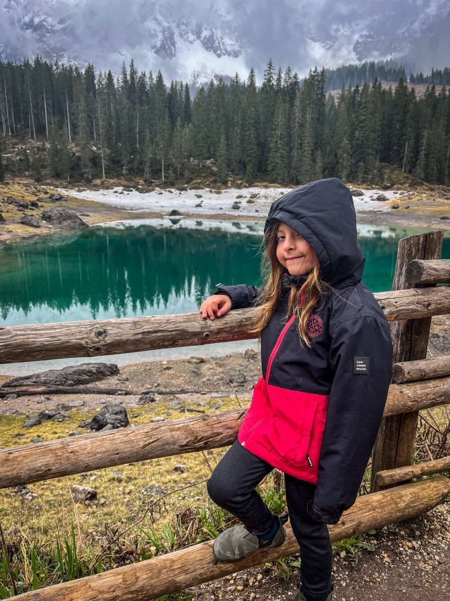
צעדנו לכיוון החניה וחצינו את הגשר התלוי המרשים, בצד השני יש המון מסלולי הליכה, צעדנו קצת אבל ויתרנו על לעשות מסלול, לאף אחד (חוץ ממני כרגיל) לא היה מצב רוח לזה, ושוב התחיל לטפטף גשם. זהו גם לי נמאס! במקור תכננתי להמשיך לכיוון אלפ סיוזי ולבלות שם בקמפינג, ולטייל לאגמים סמוכים אבל במזג אויר כזה פשוט לא בא לי, נמאס לי מהגשם! לכן אני מחליטה לחזור לאגם קאלטרן שליד בולצאנו, לפי התחזית נראה ששם לא גשום וגם לא באמת ראינו את האגם- רק מלמעלה כשטיילנו בקניון Rastenbachklamm, וגם ככה מחר צריכים לחזור דרומה לכיוון גארדה כך שזה יקצר לנו את הדרך. יצאנו לדרך שארכה כשעה, ככל שירדנו מזג האוויר השתפר והשמש יצאה.
סביב אגם קאלטרן יש 3 קמפינגים, 2 מהם בחלק של החוף: Gretl am See, אחד הוא קמפינג גרטל אמ סיי והשני הוא פשוט חניון קראונים ששייך למלון שנמצא לא רחוק משם. ויש גם את הקמפינג בדרום האגם קמפינג ג׳וזף אמ סיי. רוב המסעדות שנמצאות באזור חוף גרטל ולכן כיוונו לקמפינג בסביבה, אלא שקצת הסתבכנו וחנינו בקמפינג של החניון ששייך למלון (הוא לא נראה כמו הקמפינג שראיתי בתמונות שכיוונו אליו), עם זאת הוא נראה לא עמוס, שירותים ומקלחת נקיים ולא יקר- 36 יורו, רישום וצ׳ק אין במכונה אוטומטית אז החלטנו להישאר בינתיים. אנחנו רעבים ממש והחלטנו לאכול צהריים במסעדה שנקראת בשם המאוד מקורי Gretl am See Restaurant, באופן מפתיע האוכל היה לא רע בכלל. שבעים ומרוצים יצאנו לשוטט סביב האגם. היום יום ראשון והמקום הומה אדם, המון גרמנים/אוסטרים נופשים כאן, יושבים בבארים על משקה אפרול שפריץ, השמש נעימה וסוף סוף מרגישים אביב. טיילנו עד צפון האגם, קנינו עוד גלידה, ששוב אני הייתי צריכה לסיים, ופרשנו לשנ״צ.
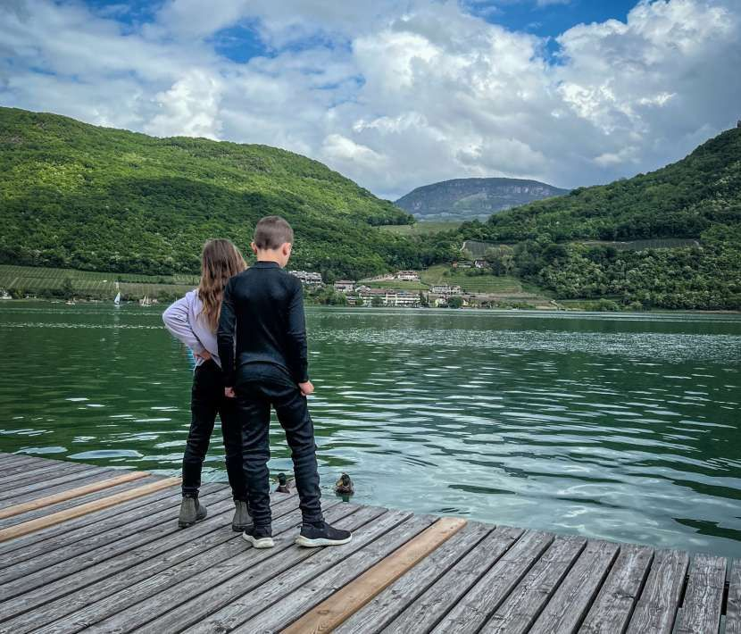
אחר הצהריים יצאנו לטיול בין הכרמים סביב החוות העתיקות שנבנו בסביבה במטרה לעבד את האדמה ולמכור יין, הזן הנפוץ פה אגב הן הענבים השחורות. ניסיתי לשדל את החצי ללכת לאיזה יקב אבל עד שהחלטנו כבר לפי גוגל כולם היו סגורים, נשאיר לפעם הבאה. היינו כלכך שבעים מארוחת הצהריים שארוחת הערב היתה נשנוש קליל. כמובן שלא מסיימים את היום ללא משחק קלפים- הפעם בחוץ, סוף סוף נעים, אין גשם ואפשר לראות כוכבים. ככה צריך להראות טיול קראוון.
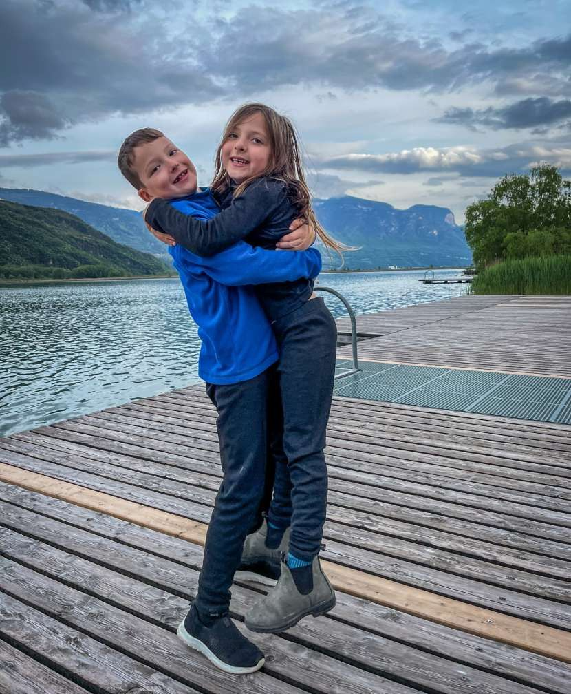
20.4.25- מפלים, טיפוס מהסרטים ושוב גשם!
היום אנחנו עוזבים את הדולומיטים ויורדים חזרה לכיוון אגם גארדה לקראת סוף הטיול שלנו. מצפה לנו נסיעה ארוכה היום, לכן החלטנו על עצירה במפלי מולינה- מה שלא הספקנו קודם בגלל הגשם. לשם שינוי מזג האוויר שמשי וחמים הבוקר. אנחנו מתארגנים בנינוחות, ויוצאים לדרך שרובה בכבישי אגרה מצויינים.
אחרי שעברנו את העיירה טרנטו אנחנו יורדים מהכביש המהיר ומתחילים לעלות בהר לכיוון העיירה מולינה, אחרי 13 פיתולים עלינו להר, הנוף יפיפה (לא דולומיטים אבל עדיין יפה). המשכנו בנסיעה בכבישים כפריים עם נופי פריחה נהדרים. בכניסה לעיירה מולינה יש חניון ענקי, שמתאים גם לקרוואנים ואפילו אפשר לשהות שם בחניה יבשה. הגענו לקראת 12, נשנשנו בקראוון ויצאנו למסלול.

בכדי להגיע לתחילת המסלול עליכם לצעוד דרך העיירה המאוד קטנה, בכל מקום יש כמובן שילוט לכיוון פארק המפלים והדרך מוליכה כל הזמן למטה במורד ההר. כשאנחנו עוברים את העיירה מתחילה הירידה האמיתית ורק המחשבה על לעלות אותה חזרה לא עושה לנו טוב. השמש הנעימה נעלמת ושוב מתחיל טפטוף מעצבן, אחרי הליכה של כ-10 דקות מהחניה הגענו סוף סוף לפארק.
ישנם 3 מסלולים בשמורה, ירוק- קצר מאוד כ-קילומטר, אדום- שמקיף את רוב המפלים בפארק כ-4 קמ ושחור- המסלול הארוך. הקופאית המליצה לנו על האדום שהוא הכי מקיף ולא ארוך מידי, שילמנו דמי כניסה והתחלנו לצעוד- שוב למטה!
העצירה הראשונה שלנו היא במערת הקדמונים, שם התחבאנו מהגשם ודמיינו שאנחנו מדליקים אש ומתחממים. משם שוב למטה בשביל החלקלק עד למפל הראשון, הצוציקים עצרו לזריקת עלים וקפיצות על אבנים. המשכנו בשביל בתוך העיר לקול פכפוך המפלים עד לעוד סדרה של מפלים מרשימים- חלקם גדולים יותר חלקם קטנים יותר, כולם יפים. הגענו למדרגות לטפס מעלה, כך הטיפוס עובר מהר יותר ולא שמים לב שעולים יחסית גבוה.
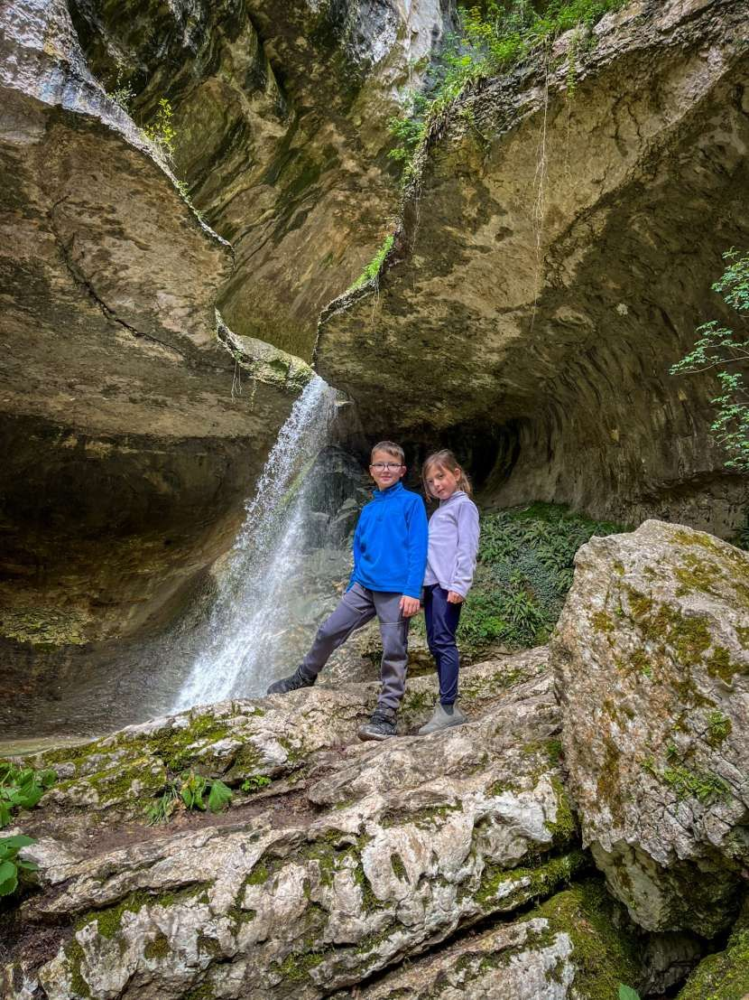
השיא של הילדים זו נדנדה גדולה דמויית אומגה שחוצה מפל, בכדי לעלות צריך למשוך את החבל אליו היא קשורה מנקודת הסיום לנקודת ההתחלה, כך שזה נורא מבלבל כשכולם עומדים בנקודת הסיום ומחכים לתפוס בחבל, כמובן שיש סייען למי שמתקשה.
המשכנו עוד לטפס חזרה ולראות עוד מפלים עד שהגענו חזרה לנקודת ההתחלה ליד הקיוסק והשירותים. שם עשינו הפסקה לעוד נשנוש כי השעה כבר שלוש ודי פיספסנו ארוחת צהריים.
העלייה חזרה לחניה היתה ממש אכזרית, השיפוע די תלול אז ראו הוזהרתם! תצפו להרבה הפסקות והתנשפויות. כבר תכננו להגיע לקראוון ולהכין צהריים אבל ריח הפיצה הנישא באוויר שינה לנו את התוכניות, אחרי מסלול כזה אין לנו כוח לבשל ופיצה מריחה כלכך טוב שמיד התפתינו וזללנו צהריים בפיצריה חביבה ליד החניה.
בטיול הזה אין לנו בכלל מזל עם מזג האוויר, אפילו היום כבגע שנכנסנו לקראוון התחיל לרדת גשם. עשינו מנוחה של שעה, ויצאנו לדרך לעיירה בורגהטו- היעד להיום.
ההרים נעלמים במהירות ושוב חזרנו למישור סביב גארדה הדרומית, המשכנו עוד דרומה והגענו לעיירה. מדובר בעיירה עתיקה וציורית, כבר בנסיעה דרכה היא הומה תיירים, אבל זו לא חוכמה, היום ערב פסחא וכל האיזור הומה אדם. ממש מעבר לגדה יש 2 חניוני קמפינג ענקיים, שניהם הומים. התמקמנו בחניון- Sosta camper במקום יש פיצריה מקלחות ושירותים (אמנם פחות נקי משאר הקמפינגים שהיינו בהם) אבל במרחק הליכה קצרצרה מהעיירה. אבל שוב הגשם משבש את התוכניות כי לא באמת אפשר לצאת ולטייל בעיירה, לכן אנחנו מאלתרים ארוחת ערב, ועוד משחק קלפים לאחר מכן.
שימו לב שבכל האיזור הזה אין קליטה סלולארית כלל, בהתחלה חשבתי שזה הקמפינג אבל גם בעיירה לא היתה כלל קליטה.
לקראת השעה שמונה התייאשתי סופית, הצוציקים איבדו את זה ויצאתי איתם לסיבוב סביב הקמפינג, ככל שצעדנו בגשם הוא הלך ונחלש וכך המשכנו עד לעיירה, זכינו לראותה ללא תיירים כמעט בכלל, רחובות ריקים, תאורה רומנטית, ברבורים בנהר, מסעדות מזמינות ממש לארוחת ערב זוגית (לפעם הבאה). וכך חזרנו לקראוון ללילה לפני אחרון בטיול שלנו.
21.4.25- יום אחרון
גם הבוקר התחיל בטפטוף מעצבן, אבל איפשר לנו לצאת לשוטטות בעיירה לפני מבול התיירים. צעדנו לאורכה ולרוחבה, טיילנו לאורך הנהר, וקינחנו בקפה ומאפה במסעדה חביבה על הנהר.
חשבתי לשלב היום ביקור בוילה סיגרוטה- Parco Giardino Sigurtà מדובר בגנים ענקיים ויפיפיים, אבל מזג האויר הנוראי הזה פשוט לא שווה את העומס של הפסחא.
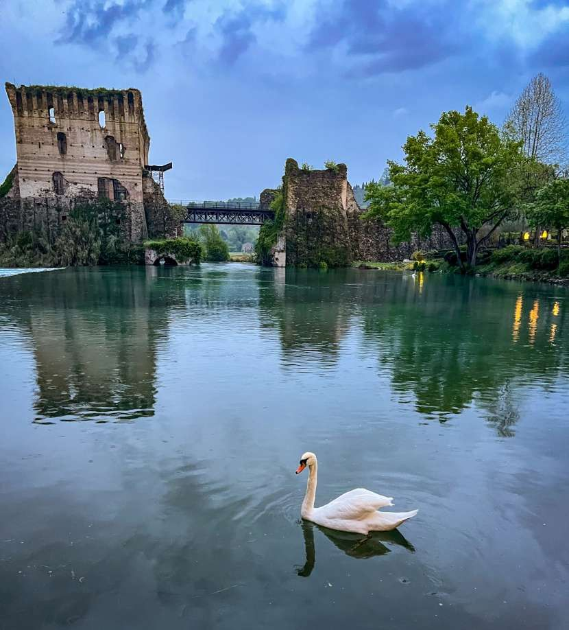
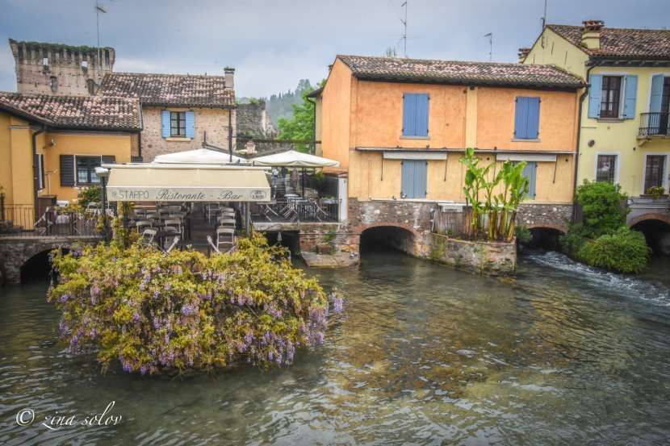
מצפה לנו עוד נסיעה ארוכה של כ-3 שעות עד לאגם מאג׳ורה, מצאתי קמפינג שנמצא חצי שעה משדה התעופה מלפנסה אליו אנו צריכים להגיע מחר, ולכך החלטנו לנסוע לשם ולהעביר שם את שארית היום.
יצאנו לדרך בשעה 11, קיוונו להגיע גג בשתיים, תוכניות לחוד ומציאות לחוד. אחרי שעה וחצי בדרכים החלטנו לעצור להפסקה ב-auto gril לקפה, ראינו כי טוב וכבר ניצלנו את הזמן גם לארוחת צהריים (שהיתה לא רעה כלל אגב). חזרנו לכביש המהיר והגענו לפקק עצום! כנראה שהמחסום של הכביש המהיר לא עבד, וכך 5 נתיבים פשוט עומדים תקועים ובקושי זזים, לקח לנו שעה וחצי לעבור את הפקק הזה. הגענו לקמפינג Italy Camping Lido בשעה ארבע וחצי, שהיה די עמוס אבל לא בטירוף, הקמפינג הענקי נמצא ממש על שפת אגם מאג׳ורה, גם כאן יש גם חניות לקראון וגם בקתות, משחקיה לילדים ובכלל די גן עדן. החצי כבר מקטר למה לא הגענו לכאן בתחילת הטיול ופשוט נשארנו כאן לכל התקופה (כן כאילו הייתי שורדת את זה). לצערי לא נשאר לנו הרבה זמן להנות מהקמפינג כי היינו צריכים לקנות כמה דברים לטיסה מחר, לכן הלכנו לסופר הענקי בעיירה (הליכה של 10דקות בשמש נעימה) כשסיימנו על הקניות וחזרנו לקמפינג השעה כבר היתה חמש. החצי הלך לקראון ואני נשארתי עם הצוציקים לשכשך רגליים באגם. בזמן שארזנו את המזוודות וארגנו את התיקים הצוציקים שוטטו ושיחקו ברחבי הקמפינג.
כמיטב המסורת גם את הלילה האחרון העברנו במשחק קלפים, הפעם בחוץ, וכך תם לו הטיול שלנו.

22.4.25- הביתה
קמנו מוקדם, הטיסה שלנו יוצאת ב13:30 ואנחנו צריכים להחזיר את הקראון ב-10. בזמן שאנחנו ממלאים מים ושטופים את הרכב אני מקבלת הודעה מהנציג שהוא יגיע רק ב11:30 בגלל תנועה. 11:30, זה ממש לא טוב, אני כבר רואה אותנו מפספסים את הטיסה, מתקשרת לחברה ולבנדנה ממנו לקחנו את הקראון, מבטיחים לנו שהנציג יפגוש אותנו בשער בשדה. כמובן שאנחנו לא מקבלים שום נקודה היכן להפגש ולכן נוסעים בעצלתיים, מתדלקים, ומחכים, מזל שיש תחנת דלק מסודרת 10 דקות מהשדה. בשעה 10:15 הנציג כותב שהוא יהיה שם עוד 5 דקות ושולח נ.צ. החזרת הקראון היתה הכי מהירה בעולם, ממש בחניה של הורדת הנוסעים לטיסות היוצאות, אנחנו פורקים ולשדה. כמובן שעם המזל שלנו טיסתינו התעכבה בעוד שעה, אבל בשעה טובה, בשבע בערב נחתנו בארץ בשלום!
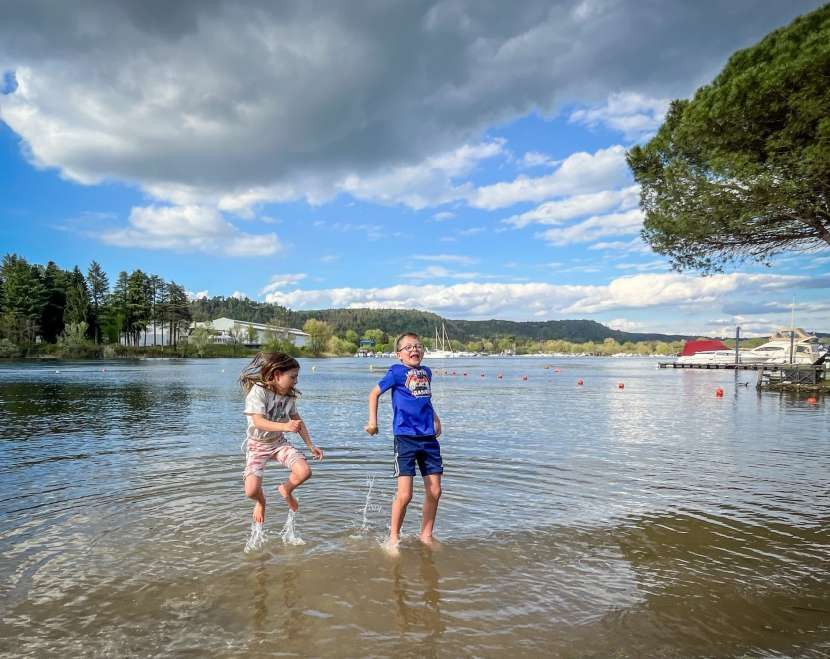
לסיכום, זה הטיול החמישי שלנו בקראון אבל לתחושתי הוא היה פחות מוצלח מהקודמים. הגשם מן הסתם לא תרם, אבל לא רק הגשם. אני חושבת שאיטליה פחות מתאימה לקראון מאשר אוסטריה למשל, שם, באוסטריה, הקמפינגים ממש במקומות הכי יפים, אם זה על האגם או באחו או בנוף הרים משגע. באיטליה התחושה היא שהכל ״ליד״, אתה ליד האגם אבל לא על האגם. לא באמת חווינו את ה״לישון בטבע״ כמו שהיה לנו באוסטריה או באיסלנד.
טיילנו רבות מחוץ לעונה, גם באוסטריה עם קרוואן, גם בהולנד גם בצ׳כיה אבל באיטליה ממש הרגשנו עיירות רפאים, באוסטריה סביב הפסחא הכל נפתח, כל האטרקציות, הרכבלים הבריכות, באיטליה זה לא כך בכלל, מה שסגור נשאר סגור (לכן נורא חשוב לתכנן בקפידה עד הפרטים הקטנים).
איטליה מאוד יקרה, האוכל יקר,המסעדות יקרות, אטרקציות לא זולות כלל, וגם מחירי הלינה, לכן דווקא הרגשתי שהקראוון הוזיל לנו עלויות לינה וגם אוכל (צמצם לנו את המסעדות כי בישלנו לבד).
כמובן שכמו בכל טיול משפחתי היו ימים מוצלחים יותר והיו פחות, מצד שני להיות 12 יום בקראון עם הילדים זה גיבוש לכל דבר (גם במובן הצבאי של המילה :))
מקווה שהסיכום יעזור למטיילים עתידיים בקראוון.
תודה שקראתם.